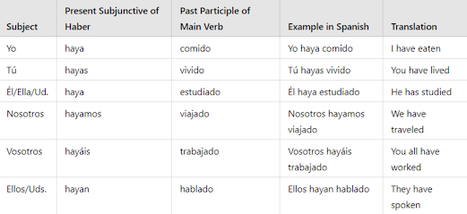
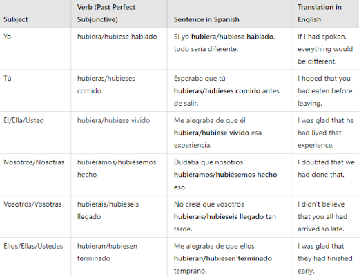

| A | B | C | D | E | F | |
|---|---|---|---|---|---|---|
1 | ||||||
2 | Ultimate self study guide to conversational spanish | |||||
3 | ||||||
4 | ||||||
5 | About the guide | Study Tips | ||||
6 | ||||||
7 | ||||||
8 | Module 1 | Module 2 | ||||
9 | ||||||
10 | ||||||
11 | Module 3 | Module 4 | ||||
12 | ||||||
13 | ||||||
14 | Module 5 | (NEW!) Module 6 | ||||
15 | ||||||
16 | ||||||
17 | Vocabs Learning | All about Spanish Accents | ||||
18 | ||||||
19 | ||||||
20 | Sample Interview Question | Mock call scripts | ||||
21 | ||||||
22 | ||||||
23 | Entertainment | App Suggestions | ||||
24 | ||||||
25 | ||||||
26 | Spanish Learning School | (NEW!) All About Job Prep | ||||
27 | ||||||
28 | ||||||
29 | 100+ Learning Materials | Feedbacks & Suggestions | ||||
30 | ||||||
| A | B | C | D | |
|---|---|---|---|---|
1 | back to homepage | |||
2 | About the guide | |||
3 | ||||
4 | The ULTIMATE SPANISH SELF STUDY GUIDE is a compilation of learning resources from different websites and my personal input on how to study Spanish. Please note that I do not offer classes, and I do not teach grammar. I compiled the most helpful videos and resources to help you self-study. The system is not downloadable , but access is available offline. Learning materials like books and audiobooks are downloadable. below are the details on how to navigate the guide. | |||
5 | ||||
6 | How to navigate the guide | |||
7 | ||||
8 | Study tips - Insider tips on being a bilingual and how to study better. | |||
9 | Study Tips | |||
10 | Module 1-4 - Compilation of links and tips on self studying :) (some photos may take a few minutes to load, totally normal!) | |||
11 | Module 1-4 | |||
12 | Vocabs learning - Compilation of commonly used verbs and nouns (with practice system) | |||
13 | Vocabs Learning | |||
14 | Sample interview questions - Most of the questions here were asked to me or my spanish bilingual friends | |||
15 | Sample Interview Question | |||
16 | Mock call - Scripts for different bilingual account | |||
17 | Mock call scripts | |||
18 | Entertainment - Fun things suggestion like songs, movies and series | |||
19 | Entertainment | |||
20 | App suggestions - Helpful learning resources | |||
21 | App Suggestions | |||
22 | Learning school - reviews from language learning school | |||
23 | Learning School | |||
24 | These are companies that hires spanish bilingual | |||
25 | Company w/ Spanish Acct. | |||
26 | (ALL DOWNLOADABLE - audiobooks, ebooks, and videos) | |||
27 | 100+ Learning Materials | |||
28 | More helpful videos soon | |||
29 | Video Tips | |||
30 | Please send us a message for any feedbacks or suggestions | |||
31 | Feedbacks & Suggestions | |||
32 | Additional learning materials soon | |||
33 | Module 5-7 | |||
34 | ||||
35 | Realtime updates: | |||
36 | ||||
37 | ||||
38 | All future updates will be posted here | |||
39 | ||||
40 | ||||
| A | B | C | D | E | F | G | |
|---|---|---|---|---|---|---|---|
1 | back to homepage | ||||||
2 | |||||||
3 | Study tips | ||||||
4 | |||||||
5 | Good to know before learning Spanish | ||||||
6 | |||||||
7 | Daily study routine | ||||||
8 | |||||||
9 | Nivel 1 | ||||||
10 | |||||||
11 | Nivel 2 | ||||||
12 | |||||||
13 | Nivel 3 (soon) | ||||||
14 | |||||||
15 | Nivel 4 (soon) | ||||||
16 | |||||||
17 | Spanish bilingual Reality (soon) | ||||||
18 | |||||||
19 | Spanish bilingual Salary (soon) | ||||||
20 | |||||||
21 | |||||||
22 | Things I Wish I Knew Before Learning Spanish: CHOOSE AN ACCENT. There are different Spanish accents that you may want to check here: https://www.youtube.com/watch?v=8DDrRjBqt-U The thing is, I don't have an accent now. I focused more on learning the grammar instead of learning the accent AND the grammar along the way (I will upload some voice recordings soon!), so I just gave up on choosing an accent, hehe. BE INTENTIONAL WITH YOUR VOCABULARY: Do not study random words. If you intend to be a call center agent, then study words about being a call center agent. I have some Mock call scripts; you may want to read some of them from time to time to familiarize yourself. Always CROSS-REFERENCE. Do not just rely on one video. Practice listening to different Spanish accents (YOUTUBE will be your BFF) - Once you get a grasp of the language, maaaring maguluhan ka pa rin because Spanish speakers say things differently. YOU DO NOT HAVE TO STUDY EVERY DAY. Create a study routine; it can be 1-2 hrs/day 5x a week. This will avoid burnout! YOU WILL NOT LEARN THIS IN 3 MONTHS. I enrolled at Hola Amigos expecting I'll learn the language within 3 months. I didn't. I had to self-study pa ng another 3 months then I applied on the 6th month of learning the language. It may take you more or less than 6 months pero no pressure. I swear in demand pa rin ang Spanish. | ||||||
23 | |||||||
24 | Daily Study Routine Suggestions Review 1 or 2 Topics Per Day: Don't push yourself too hard; if you feel burnout, stick to 1 or 2 topics. Remember, consistency beats intensity. Learn sustainably! Practice Pronunciations: Speak out loud, even if it's just to yourself. Use mock call script tab for basic phrases to practice your pronunciation. Watch a Few Minutes of Your Favorite Show: Add English subtitles for support. If you're on a PC, try the Language Reactor Chrome extension for dual subtitles! Diary Time: Reflect on the day with 1-2 sentences. Write about what you know, what happened, or what you learned. For translation, use deepl.com as a reference. Connect with Spanish Natives: Download Tandem or HelloTalk for grammar corrections and opinions. Spanish natives there are friendly and super helpful! Remember, adapt this routine to fit your schedule, and enjoy the learning process! Buena suerte! (Good luck!) | ||||||
25 | |||||||
26 | Nivel 1 Tips While this module might seem a bit dull and basic, REMEMBERRR, don't skip the fundamentals when diving into grammar lessons. It could be your downfall! (Just kidding) Ever tried teaching a BABY to talk? Babies don't learn grammar; they grasp the basics like 1, 2, 3, and A, B, C. Mama, papa, hello, kamusta... It's the same for you! Approach this level like a baby I wish someone told this to me when I started learning - this reminder will avoid burnouts.. you dont have to learn everything at once ;) These are basics but crucial. To make learning enjoyable, take full advantage of the practice plays. (Have you downloaded the SpanishDict app? It's a must!!!) Paying attention to pronunciation is key, okay? After this level, give recording yourself and introducing who you are a shot! | ||||||
27 | Click here for Nivel 1 | ||||||
28 | |||||||
29 | Nivel 2 Study Tips: (It may look short, but it probably took mga 3 weeks up for us to study this level. ) If Nivel 1 was basic, then you may find this level not basic... at all!! OKay, before we start.. remember consistency is better than intensity. This level may be confusing at times. Always cross-reference like watching videos, reading the book, checking the SpanishDict website to learn more about it. Remember.. 1-2 lessons per day. Okay? About the lesson: Personal pronouns - this may get confusing, especially vosotros and vosotras (other countries do not use vosotros and vosotras. I personally don't use it, but I am adding it as a study reference, oki?) 'YO' can also be pronounced like 'YO' - as in yoyo' or 'YO' - as in jojo' ELLA or ELLO can be 'EJA, EJO' or 'EYA, EYO' This really just depends on the country or accent you want to do. Personal pronouns can also be omitted besides verbs; the whole sentence can function without it! You'll learn more about it Gender of nouns - THIS IS EASY AND CHALLENGING AT THE SAME TIME. You may need to focus study this lesson in a day :) There are certain rules that get confusing, and you won't remember everything at once. The key is to practice a looooot. The book has a lot of practice exercises on this. Spanish Adjectives - There are a lot of rules, but they're easy and self-explanatory. Focus on learning some commonly used adjectives and expand your knowledge daily. AND NOW THE VERBS.. conjugation will definitely be hard. Practice lang ang kaya kong iadvise. But there are verbs that you can use para mas madali gumawa ng sentences! Always keep those formula in minds (Yung conjugated verbs + infinitives.. I use that everyday on my calls) I explained almost all the details you need to know about the verbs. Make sure to practice a lot and approach each lesson ng once a day. If napapagod ka, rest and stop, rest and watch a Spanish movie. More updates on this nivel, I promise! | ||||||
30 | Click here for Nivel 2 | ||||||
31 | |||||||
| A | B | C | D | E | F | |
|---|---|---|---|---|---|---|
1 | back to homepage | |||||
2 | Nivel 1 | |||||
3 | Before starting with any grammar lessons, it's very important that you have a grasp of the language. Let me itroduce you to the Spanish basics here in Nivel 1. | |||||
4 | ||||||
5 | Here's what's included on this level: | |||||
6 | Spanish Alphabet and it's pronunciation | |||||
7 | Basic Greetings and common expression | |||||
8 | Numbers, Colors, and days of the week | |||||
9 | Common nouns | |||||
10 | Introduction | |||||
11 | Simple phrases and questions | |||||
12 | ||||||
13 | Spanish Alphabet and it's pronunciation | |||||
14 | ||||||
15 | ||||||
16 | reference 1: | Video 1 | ||||
17 | reference 2: | Video 2 | ||||
18 | practice: | click here to play | ||||
19 | ||||||
20 | Practice: Spell out your name using the Alphabet. For example: | |||||
21 | Mi nombre es Samantha. | |||||
22 | S | ese | ||||
23 | A | a | ||||
24 | M | eme | ||||
25 | A | a | ||||
26 | N | ene | ||||
27 | T | te | ||||
28 | H | ache | ||||
29 | A | a | ||||
30 | ||||||
31 | Agent: Buenas tardes, Me puede dar su nombre por favor? Caller: Mi nombre es Alex. Agent: Cmo se deletrea su nombre? Caller: A de Ana, L de Lima, E de Elepante, ekis. Agent: Good afternoon, can you give me your name, please? Caller: My name is Alex. Agent: How do you spell your name? Caller: A for Ana, L for Lima, E for Elephant, X. | |||||
32 | ||||||
33 | Good to know: | H is Silent in spanish if a word starts in H | ||||
34 | If you don't like the phoenetics on any examples, you may create your own ;) | |||||
35 | There is a new Spanish Alphabet, it no longer includes LL and RR | |||||
36 | ||||||
37 | Basic Greetings and Expressions | |||||
38 | ||||||
39 | reference 1: | Video | ||||
40 | practice: | click here to play | ||||
41 | ||||||
42 | ||||||
43 | These are the Spanish basic words that I always use on each and every phone call: | |||||
44 | ||||||
45 | Hola! / Hola! | Hello! / Hi! | ||||
46 | Buenos das! | Good morning! | ||||
47 | Buenas tardes! | Good afternoon! | ||||
48 | Buenas noches! | Good evening! | ||||
49 | Cmo ests? | How are you? | ||||
50 | Cual es su Nombre | What is your name? | ||||
51 | Por favor. | Please. | ||||
52 | Gracias. | Thank you. | ||||
53 | De nada. | You're welcome. | ||||
54 | Perdn / Disculpa. | Excuse me / Sorry. | ||||
55 | Lo siento. | I'm sorry. | ||||
56 | ||||||
57 | Numbers, Colors, Days of the week and Months | |||||
58 | Numbers | spanishdict | ||||
59 | video | |||||
60 | Colors | spanishdict | ||||
61 | video | |||||
62 | Month | spanishdict | ||||
63 | video | |||||
64 | Days of the week | spanishdict | ||||
65 | video | |||||
66 | ||||||
67 | This shouldn't be as hard to familiarize since tayong mga Filipino usually use these words (Except for the colors) | |||||
68 | Can you answer this in Spanish? | |||||
69 | Favorite color: | |||||
70 | Birth year: | |||||
71 | Hair color: | |||||
72 | # of siblings: | |||||
73 | ||||||
74 | ||||||
75 | How you can use it on a phone call: | |||||
76 | Agent: Agent: Buenas tardes, en qu mes es su cumpleaos? Caller: Es en diciembre | |||||
77 | Agent: What month is your birthday? Caller: It's on December | |||||
78 | ||||||
79 | Agent: Qu da prefiere para su cita? Caller: Viernes y Sabado | |||||
80 | Agent: What day do you prefer for your appointment? Caller: Friday and Saturday | |||||
81 | ||||||
82 | Common nouns | |||||
83 | ||||||
84 | Make learning fun by playing games! | |||||
85 | Remember: Be intentional with your vocabulary. Before you study everything and overload yourself with too much words. | |||||
86 | ||||||
87 | Study here: | click here: | ||||
88 | ||||||
89 | ||||||
90 | Spanish Introduction and about you questions | |||||
91 | reference 1: | video 1 | ||||
92 | reference 2: | video 2 | ||||
93 | website ref: | SpanishDict | ||||
94 | practice: | click here to play | ||||
95 | ||||||
96 | In Spanish there are a lot of ways to say one thing. Kahit isa lang yung ibig sabihin. For example: | |||||
97 | ||||||
98 | Different ways to say "I am" | |||||
99 | Mi nombre es | Ang pangalan ko ay | ||||
100 | Soy | Ako si | ||||
101 | Me llamo | Ang tawag sakin ay | ||||
102 | Mi nombre completo es | Ang buong pangalan ko ay... | ||||
103 | ||||||
104 | There is a formal and informal way of speaking with other Spanish speakers. Katulad sa Pilipinas, kapag gumagamit tayo ng "po" at "opo" sa matatanda o hindi natin kilala. | |||||
105 | ||||||
106 | When to use: Formal (Sign of respect) -Someone you don't know well -Someone older -Professional settings and official setting Informal (More casual and friendly tone) -family -friends -people you know well -same age or younger | |||||
107 | ||||||
108 | ||||||
109 | For example: | |||||
110 | Cul es tu nombre? | |||||
111 | Cul es su nombre? | |||||
112 | ||||||
113 | note: Always use formal speech on speaking with callers | |||||
114 | do not focus on the grammar yet, but focus on the expression | |||||
115 | ||||||
116 | Different ways to say: What is your name? | |||||
117 | ||||||
118 | ||||||
119 | ||||||
120 | ||||||
121 | ||||||
122 | ||||||
123 | ||||||
124 | ||||||
125 | It only means one thing: | |||||
126 | Anong tawag sayo? | |||||
127 | Anong pangalan mo? | |||||
128 | Anong completong pangalan mo? | |||||
129 | ||||||
130 | Different ways to say: What do you do for a living? | |||||
131 | ||||||
132 | ||||||
133 | ||||||
134 | ||||||
135 | ||||||
136 | ||||||
137 | ||||||
138 | ||||||
139 | Good to know: | Formal option is used on phone calls. | ||||
140 | These were all useful on my spanish interview | |||||
141 | ||||||
142 | Cual es tu favorito/a ______? | |||||
143 | reference: | Click here for vocabulary | ||||
144 | Food | Click here for vocabulary | ||||
145 | Drinks | Click here for vocabulary | ||||
146 | Dessert | Click here for vocabulary | ||||
147 | Vegetable | Click here for vocabulary | ||||
148 | ||||||
149 | Useful vocabulary | |||||
150 | vegetable | verdura | ||||
151 | meat | carne | ||||
152 | breakfast | desayuno | ||||
153 | lunch | almuerzo | ||||
154 | desert | postre | ||||
155 | drink | bebida | ||||
156 | fruit | fruta | ||||
157 | ||||||
158 | Cul es tu _______ favorito/a? | |||||
159 | What is your favorite? | |||||
160 | ||||||
161 | Can you answer this? | |||||
162 | ||||||
163 | ||||||
164 | ||||||
165 | ||||||
166 | ||||||
167 | ||||||
168 | ||||||
169 | ||||||
170 | ||||||
171 | After watching the video, and lessons can you Introduce yourself? (You don't have to memorize it, you may also try to imitate a spanish accent to practice) | |||||
172 | ||||||
173 | Hola | Hello | ||||
174 | Buenos das | Good morning | ||||
175 | Me llamo [tu nombre] | My name is | ||||
176 | Soy de [tu pas] | I am from [your country] | ||||
177 | Tengo [tu edad] aos | I am [your age] years old | ||||
178 | Trabajo como | I work as [your profession] | ||||
179 | arquitecto/a (architect) ingeniero (engineer) agente de centro de llamadas(call center agent) enfermera (nurse) mdico (doctor) profesor (teacher) contable (accountant) | |||||
180 | Me gusta | I like [your hobbies] | ||||
181 | cantar (sing) bailar (dance) leer libros (read books) maquillarme (do my make up) jugar a videojuegos (play video games) ver pelculas (watch movies) dormir (sleep) comer (eat) | |||||
182 | Hablo un poco de espaol | I speak a little Spanish | ||||
183 | Estoy aprendiendo espaol | I am learning Spanish | ||||
184 | Mi comida favorita es | My favorite food is | ||||
185 | Mi color favorito es | My favorite color is | ||||
186 | ||||||
187 | ||||||
| A | B | C | D | E | F | |
|---|---|---|---|---|---|---|
1 | back to homepage | |||||
2 | Nivel 2 | |||||
3 | Level 2 builds upon the foundational knowledge acquired in Spanish Level 1 | |||||
4 | ||||||
5 | What's included on this level: | |||||
6 | How to tell time | Verbs that changes | ||||
7 | personal pronouns | Special verbs | ||||
8 | possessive adjective | Personal A | ||||
9 | Gender of nouns | Articles | ||||
10 | spanish adjective | normales ordinales | ||||
11 | Regular verbs | Interrogative words | ||||
12 | Irregular verbs | Negation words | ||||
13 | ||||||
14 | How to tell time | |||||
15 | ||||||
16 | ||||||
17 | ref 1: | Video 1 | ||||
18 | ref 2: | Video 2 | ||||
19 | practice: | click here to play | ||||
20 | ||||||
21 | How you can use it on a phone call: | |||||
22 | Agent: "Buenas tardes, A qu hora cierra la tienda?" Caller: "Cierra a las 8 de la noche." Agent: "Good afternoon, what time does the store close?" Caller: "It closes at 8 in the evening." | |||||
23 | ||||||
24 | Personal Pronouns | |||||
25 | ||||||
26 | ||||||
27 | ref: | Video | ||||
28 | practice: | click here to play | ||||
29 | Book ref: | Complete spanish all in one, page 16 | ||||
30 | Personal pronouns are words that take the place of nouns to avoid repetition. These pronouns help avoid redundancy and make communication more efficient. | |||||
31 | ||||||
32 | ||||||
33 | ||||||
34 | Good to know | |||||
35 | the verb conjugation often carries enough information about the subject, so the subject pronouns can be omitted without causing confusion. With Subject Pronoun: "Yo quiero un caf." (I want a coffee.) Without Subject Pronoun: "Quiero un caf." | |||||
36 | ||||||
37 | Possessive adjectives | |||||
38 | ||||||
39 | ref: | Video | ||||
40 | practice: | click here to play | ||||
41 | ||||||
42 | Possessive adjectives are words used to indicate ownership or possession of something. They show to whom or to what something belongs. | |||||
43 | ||||||
44 | for example: | |||||
45 | ||||||
46 | example on how to use it on a phone call: | |||||
47 | Agent: "Buenas tardes, En qu puedo ayudarlo hoy?" Caller: "Hola, cunto es mi factura?" Agent: "Su factura es de $200." Agent: "Good afternoon, how can I assist you today?" Caller: "Hello, how much is my bill?" Agent: "Your bill is $200." | |||||
48 | Possessive pronouns | |||||
49 | ref 1: | Video | ||||
50 | web ref: | SpanishDict | ||||
51 | Spanish possessive pronouns are words that stand alone and represent the ownership or possession of a noun. They replace both the noun and its corresponding possessive adjective, streamlining language. | |||||
52 | ||||||
53 | ||||||
54 | ||||||
55 | Gender of nouns | |||||
56 | ||||||
57 | ||||||
58 | ref: | Video | ||||
59 | prac 1: | click here to play | ||||
60 | prac 2: | click here to play | ||||
61 | Book ref: | Complete spanish all in one, Pg. 52-58 | ||||
62 | ||||||
63 | Nouns A noun is a part of speech that refers to a person, place, thing, idea, or concept. Nouns are | |||||
64 | ||||||
65 | In Spanish, every noun has a gender it's either masculine (boy) or feminine (girl). It's like every word has a little character story they're either a boy or a girl, and we use different words to show it! | |||||
66 | ||||||
67 | Articles | |||||
68 | ||||||
69 | ref 1: | Video 1 | ||||
70 | ref 2: | Video 2 | ||||
71 | Definite ref: | SpanishDict | ||||
72 | Indefinite ref: | SpanishDict | ||||
73 | Indefinite book ref | Complete spanish all in one, Page 63-65 | ||||
74 | Definite book ref: | Complete spanish all in one, Page 59-62 | ||||
75 | ||||||
76 | Articles: In Spanish, articles are words that indicate the gender (masculine or feminine) and number (singular or plural) of a noun. There are two types of articles: definite and indefinite. | |||||
77 | ||||||
78 | Definite Article: A definite article isused before a noun to indicate that we are referring to a specific person, place, thing, or idea making it clear which one we are talking about. Meaning in Filipino: "Ang" Meaning in English: "The" | |||||
79 | ||||||
80 | ||||||
81 | ||||||
82 | Indefinite Article: indefinite articles are used in Spanish to convey the idea of "a" or "an" for singular nouns and "some" for plural nouns. | |||||
83 | ||||||
84 | ||||||
85 | ||||||
86 | Personal A | |||||
87 | ||||||
88 | ref: | Video | ||||
89 | web ref: | SpanishDict | ||||
90 | ||||||
91 | "Personal A" is used before a direct object that represents a specific person or people, indicating that the action of the verb is directed toward them. When to Use: It is used when the direct object is a specific person, group of people, or even certain domesticated animals that are treated like family members. There is no direct equivalent in English or Filipino the usage of the "personal a" is unique to Spanish. | |||||
92 | ||||||
93 | ||||||
94 | ||||||
95 | Contractions | |||||
96 | ||||||
97 | ref: | Video | ||||
98 | web ref: | SpanishDict | ||||
99 | ||||||
100 | In Spanish, there are contractions that occur when a definite article (the) combines with certain prepositions. The most common contractions involve the definite articles "el" and "la" contracting with the prepositions "a" and "de." | |||||
101 | ||||||
102 | ||||||
103 | ||||||
104 | Spanish adjectives | |||||
105 | ||||||
106 | ||||||
107 | Tips only: | Video | ||||
108 | practice: | click here to play | ||||
109 | ||||||
110 | Adjectives are words that describe or modify nouns (people, places, things, or ideas) by providing more information about their qualities, characteristics, or attributes. | |||||
111 | ||||||
112 | ||||||
113 | ||||||
114 | Agreement with Nouns: 1. Adjectives must agree in gender and number with the nouns they modify. Example: Casa grande (big house), Casas grandes (big houses) 2. Placement of Adjectives: Adjectives typically come after the noun but may come before for emphasis, especially with certain categories like beauty, age, goodness, and size. Example: Un hombre rico (a man rich - a rich man), Una ciudad antigua (a city ancient - an ancient city) 3. Exceptions to Placement: Some adjectives always come before the noun, such as those related to quantity, emphasis, or evaluation. Example: Mucha gente (many people), Cierto problema (a certain problem) 4. Adjective Order: Follow a specific order when using multiple adjectives: quantity, quality, age, size, shape, color, proper adjective, and purpose. Example: Una bonita casa blanca (a beautiful white house) 5. Using Comparative and Superlative Forms: Understand how to form comparative and superlative adjectives to compare different things. Example: Ms grande (bigger), El ms grande (the biggest) 6. Learn Common Adjective Endings: Recognize common adjective endings (-o, -a, -os, -as) for gender and number. 7.Practice Regularly: Engage in conversations, writing, and reading to reinforce your understanding and application of Spanish adjectives. | |||||
115 | ||||||
116 | commonly used adjectives: | review here | ||||
117 | ||||||
118 | Present tense - regular | |||||
119 | ||||||
120 | ||||||
121 | practice: | click here to play | ||||
122 | ref: | Video | ||||
123 | Book ref: | Complete spanish all in one, page 17-25 | ||||
124 | Book reference is more detailed | |||||
125 | Present tense The present tense is a verb form that expresses actions, events, or states happening at the current moment or regularly occurring. | |||||
126 | ||||||
127 | Use the present tense in Spanish for: -What's happening right now: Yo estudio (I study). -Habits or routines: Normalmente, compro las frutas en el supermercado. (Usually I buy fruit at the supermarket.). -Facts or truths: El sol sale por el este (The sun rises in the east). -Scheduled future events: Maana salgo de vacaciones. (Tomorrow, I leave for vacation ) -To ask questions: Bebes caf o t? (Do you drink coffee or tea?) | |||||
128 | Keep in mind the auxiliary verb do in English is not translated. In Spanish, an auxiliary verb is not needed to ask a question. | |||||
129 | ||||||
130 | ||||||
131 | ||||||
132 | ||||||
133 | Conjugation | |||||
134 | Conjugation it's changing the form of a verb to fit the context of a sentence. | |||||
135 | ||||||
136 | Infinitive | Verbs in its purest form | ||||
137 | *words that you usually use to search in the dictionary. | |||||
138 | ||||||
139 | example infinitive verbs: | |||||
140 | HABLAR | to speak | ||||
141 | COMER | to eat | ||||
142 | VIVIR | to live | ||||
143 | ||||||
144 | to conjuate regular verbs, simply remove the -ar, -er, and -ir endings. | |||||
145 | ||||||
146 | conjugated verbs | |||||
147 | Hablar | -o -as -a -amos -ais -an | Hablo Hablas Habla Hablamos Hablais Hablan | I speak. You speak (informal, singular). He/She/You(formal) speak(s). We speak. You all speak (informal, plural). They/You all speak. | ||
148 | ||||||
149 | commonly used AR verbs: | play here | ||||
150 | ||||||
151 | Comer | -o -es -e -emos -eis -en | Como Comes Come Comemos Comeis Comen | I eat. You eat(informal, singular). He/She/You(formal) eat(s). We eat. You all eat (informal, plural). They/You eat | ||
152 | ||||||
153 | commonly used ER verbs: | play here | ||||
154 | ||||||
155 | Vivir | -o -es -e -imos -is -en | Vivo Vives Vive VIvimos Vivis Viven | I live. You live(informal, singular). He/She/You(formal) live(s). We live. You all live(informal, plural). They/You live. | ||
156 | ||||||
157 | commonly used IR verbs: | play here | ||||
158 | ||||||
159 | ||||||
160 | Irregular verb: IR | |||||
161 | ||||||
162 | ||||||
163 | ref: | Video | ||||
164 | web ref: | SpanishDict | ||||
165 | ||||||
166 | "Ir" is a highly used verb in Spanish, and it is often used to express the action of going or moving from one place to another. The verb "ir" is an irregular verb in Spanish, and it doesn't follow the regular conjugation patterns of regular -ir verbs. | |||||
167 | ||||||
168 | Ir conjugation practice | play here | ||||
169 | ||||||
170 | Irregular verb: SER | |||||
171 | ||||||
172 | ||||||
173 | ref: | Video | ||||
174 | web ref: | SpanishDict | ||||
175 | Book ref: | Complete spanish all in one, page 70-72 | ||||
176 | ||||||
177 | "ser" is an irregular verb in Spanish, and it is used to express: 1. inherent qualities 2.characteristics 3.origin 4.identity, etc. Remember, "ser" is for things that are more permanent, like your name, where you're from, or what you're like. It's like describing the important, unchanging parts of you and others. | |||||
178 | ||||||
179 | ||||||
180 | Ser conjugation practice | play here | ||||
181 | ||||||
182 | Irregular verb: ESTAR | |||||
183 | ||||||
184 | ||||||
185 | ref: | Video | ||||
186 | Book ref: | Complete spanish all in one, page 72-75 | ||||
187 | ||||||
188 | "Estar" is another important verb in Spanish, and it's used to talk about: 1.temporary states 2.conditions 3.feelings 4.locations. Unlike "ser," which is more about permanent and inherent characteristics, "estar" is about the current, temporary state of things. | |||||
189 | ||||||
190 | ||||||
191 | Estar conjugation practice | play here | ||||
192 | ||||||
193 | Differences between ser and estar | |||||
194 | ||||||
195 | ||||||
196 | Irregular verbs in (Yo form) 1st person | |||||
197 | ||||||
198 | ||||||
199 | ref: | Video | ||||
200 | web ref: | SpanishDict | ||||
201 | practice: | click here to play | ||||
202 | Book ref: | Complete spanish all in one, page 72-75 | ||||
203 | ||||||
204 | Irregular verbs in the "yo" form refer to verbs in Spanish that don't follow the regular conjugation patterns for the first person singular (yo) in certain tenses. | |||||
205 | examples: | |||||
206 | ||||||
207 | ||||||
208 | ||||||
209 | Irregular verbs all person (except nosotros and vosotros) | |||||
210 | ||||||
211 | ||||||
212 | practice: | click here to play | ||||
213 | Book ref: | Practice makes perfect, page 47 | ||||
214 | ||||||
215 | Irregular verbs except nosotros and vosotros. The irregularities occur in the "yo," "t," "l/ella/usted," and "ellos/ellas/ustedes" forms, while the nosotros and vosotros forms follow regular conjugation patterns. | |||||
216 | ||||||
217 | ||||||
218 | ||||||
219 | stem changing verbs (E to IE) | |||||
220 | ||||||
221 | ||||||
222 | ref: | Video | ||||
223 | practice: | click here to play | ||||
224 | Book ref: | Practice makes perfect, page 67 | ||||
225 | ||||||
226 | the stem change occurs in the "e" of the stem, changing to "ie" in all forms except nosotros and vosotros. | |||||
227 | ||||||
228 | ||||||
229 | stem changing verbs (O to UE) | |||||
230 | ||||||
231 | ||||||
232 | ref: | Video | ||||
233 | practice: | click here to play | ||||
234 | Book ref: | Practice makes perfect, page 65 | ||||
235 | the stem change occurs in the "o" of the stem, changing to "ue" in all forms except nosotros and vosotros. | |||||
236 | ||||||
237 | ||||||
238 | ||||||
239 | stem changing verbs (E to I) | |||||
240 | ||||||
241 | ||||||
242 | ref: | Video | ||||
243 | practice: | click here to play | ||||
244 | Book ref: | Practice makes perfect, page 69 | ||||
245 | ||||||
246 | the stem change occurs in the "e" of the stem, changing to "i" in all forms except nosotros and vosotros. | |||||
247 | ||||||
248 | ||||||
249 | ||||||
250 | Gustar | |||||
251 | ||||||
252 | ||||||
253 | ref: | Video | ||||
254 | practice: | click here to play | ||||
255 | Book ref: | Practice makes perfect, page 93 | ||||
256 | ||||||
257 | The verb "gustar" is a unique and commonly used verb in Spanish to express likes and dislikes. "gustar" works by indicating what is pleasing to someone. | |||||
258 | ||||||
259 | Hay | |||||
260 | ||||||
261 | ||||||
262 | ref: | Video | ||||
263 | web ref: | StudySpanish | ||||
264 | Book ref: | Practice makes perfect, page 31 | ||||
265 | ||||||
266 | "Hay" is a fundamental Spanish verb that serves as the equivalent of the English verb "there is" or "there are." It is used to express the existence or presence of something. | |||||
267 | ||||||
268 | 2 verbs in a sentence | |||||
269 | ||||||
270 | ref: | Video | ||||
271 | ref: | Video | ||||
272 | ||||||
273 | The structure of conjugated verb + infinitive is commonly used to express actions that involve two verbs. The first verb is conjugated, and the second verb remains in its infinitive form. Here are five examples to illustrate this construction: For example: Quiero bailar. Quiero (I want - conjugated form of querer) bailar (to dance - infinitive form) Translation: I want to dance. Necesitas estudiar. Necesitas (You need - conjugated form of necesitar) estudiar (to study - infinitive form) Translation: You need to study. Puede cocinar. Puede (He/She/You can - conjugated form of poder) cocinar (to cook - infinitive form) Translation: He/She/You can cook. Quieren aprender. Quieren (They/You all want - conjugated form of querer) aprender (to learn - infinitive form) Translation: They/You all want to learn." | |||||
274 | ||||||
275 | tener que and hay que | |||||
276 | ||||||
277 | ||||||
278 | tener que vs hay que | Video 1 | ||||
279 | hay que | Video 2 | ||||
280 | web ref: | SpanishDict | ||||
281 | ||||||
282 | Tener que + inf: | |||||
283 | ||||||
284 | Tener que: This part means "to have to." It comes from the verb "tener," which means "to have." Infinitive: Just like in "tengo que + infinitive," the infinitive is the base form of the verb that follows "tener que." Equivalent in Filipino: "Kailangan" or "Dapat." Both phrases convey a sense of obligation or something that one needs to do. | |||||
285 | ||||||
286 | Tener que + estudiar conjugations: | |||||
287 | ||||||
288 | ||||||
289 | ||||||
290 | Hay que + inf: | |||||
291 | "Hay que" in Spanish: Means "one must" or "it is necessary." It expresses a general obligation or necessity. Equivalent in Filipino: "Kailangan" or "Dapat." Both phrases convey a sense of obligation or something that one needs to do. "Hay que" in Spanish is actually an impersonal expression, and it doesn't change its form based on the subject. (No conjugations) | |||||
292 | ||||||
293 | ||||||
294 | ||||||
295 | tener que vs hay que | |||||
296 | ||||||
297 | Use "tener que" when you want to emphasize a specific, personal obligation related to the subject. Use "hay que" when you want to express a more general or impersonal necessity that applies broadly. | |||||
298 | ||||||
299 | ||||||
300 | ||||||
301 | Ir a + infinitivo | |||||
302 | ||||||
303 | ||||||
304 | ref: | Video | ||||
305 | web ref 1: | Spanish Academy | ||||
306 | web ref 2: | SpanishDict | ||||
307 | Book ref: | Practice makes perfect, page 52 | ||||
308 | ||||||
309 | "ir a + infinitive" in Spanish is a way to express intentions or plans for future actions. "Ir a": This part comes from the verb "ir," which means "to go." Infinitive: The infinitive is the base form of the verb. It is unconjugated. if you want to talk about what someone intends or plans to do in the future, "ir a + infinitive" is a useful structure to convey thatmeaning. | |||||
310 | ||||||
311 | ||||||
312 | ||||||
313 | acabar de + infinitivo | |||||
314 | ||||||
315 | ||||||
316 | ref 1: | Video 1 | ||||
317 | ref 2: | Video 2 | ||||
318 | ref 3: | Video 3 | ||||
319 | web ref: | StudySpanish | ||||
320 | ||||||
321 | The phrase "acabar de + infinitive" is used in Spanish to express that an action has just been completed or happened recently. "Acabar de": This expression means "to have just" or "to have recently" completed an action. Infinitive: The base form of the verb that follows "acabar de" remains unconjugated. In Filipino, the equivalent expression would be "kakatapos lang". | |||||
322 | ||||||
323 | ||||||
324 | ||||||
325 | volver a+ inf | |||||
326 | ||||||
327 | ||||||
328 | ref: | Video 1 | ||||
329 | ref 2: | Video 2 | ||||
330 | ||||||
331 | "Volver + a + infinitive" means "to return to doing something" or "to do something again." It emphasizes the repetition or return to a specific action. Yo vuelvo a estudiar. (I return to study.) In this sentence, "volver" is conjugated for the first person singular (yo), and the infinitive verb "estudiar" indicates the action of studying. Ellos vuelven a visitar el museo. (They visit the museum again.) Here, "vuelven" is conjugated for the third person plural (ellos), and "visitar" is the infinitive verb representing the action of visiting. | |||||
332 | "volver" is a stem-changing verb in the present tense. Specifically, it undergoes a stem change in the form of o-to-ue. | |||||
333 | ||||||
334 | ||||||
335 | ||||||
336 | Interrogative words | |||||
337 | ||||||
338 | ||||||
339 | ref: | Video | ||||
340 | web ref: | SpanishDict | ||||
341 | Book ref: | Complete spanish all in one, page 148 | ||||
342 | ||||||
343 | An interrogative word is a word used to form questions. These words are essential for seeking information or clarification in a conversation. | |||||
344 | ||||||
345 | ||||||
346 | ||||||
347 | Ordinal numbers | |||||
348 | ||||||
349 | ||||||
350 | ref: | Video | ||||
351 | practice: | click here to play | ||||
352 | ||||||
353 | Ordinal numbers are used to indicate the position of an element in relation to others. | |||||
354 | for example: | |||||
355 | - El primer da (The first day) - La segunda vez (The second time) - El tercer captulo (The third chapter) - La cuarta pgina (The fourth page) - El quinto elemento (The fifth element) | |||||
356 | ||||||
357 | ordinal numbers practice | |||||
358 | ||||||
359 | negative words | |||||
360 | ||||||
361 | ||||||
362 | ref: | Video | ||||
363 | practice: | click here to play | ||||
364 | Book ref: | Complete spanish all in one, page 148 | ||||
365 | Negation in Spanish involves expressing negation or denial, indicating that something is not true or that an action is not happening. | |||||
366 | ||||||
367 | 1. Negating Verbs: To make a sentence negative, typically place the word "no" before the verb. Example: No quiero ir. (I don't want to go.) 2. Double Negation: In Spanish, it's common to use double negation for emphasis. In this case, "no" is placed before the verb, and another negative word (such as "nada" or "nadie") may also be used. Example: No quiero nada. (I don't want anything.) | |||||
368 | ||||||
369 | ||||||
| A | B | C | D | E | F | |
|---|---|---|---|---|---|---|
1 | back to homepage | |||||
2 | Nivel 3 | |||||
3 | Here's what's included on this level: | |||||
4 | present progressive past tense preterite imperfect Preterite irregular imperfect irregular Saber vs conocer Pedir vs preguntar por para demonstrative pronouns | |||||
5 | ||||||
6 | Present Progressive tense | |||||
7 | ||||||
8 | ||||||
9 | reference: | Video | ||||
10 | practice: | click here to play | ||||
11 | ||||||
12 | the present progressive tense is used to express actions that are happening at the moment of speaking. | |||||
13 | ||||||
14 | Present Participle Formula: | |||||
15 | AR VERB: Estar+-ando | |||||
16 | ||||||
17 | ||||||
18 | ||||||
19 | conjugation practice | play here | ||||
20 | ||||||
21 | ER VERB: Estar+-iendo | |||||
22 | ||||||
23 | ||||||
24 | conjugation practice | play here | ||||
25 | ||||||
26 | IR VERB: Estar+-iendo | |||||
27 | ||||||
28 | ||||||
29 | conjugation practice | play here | ||||
30 | ||||||
31 | LESSON 2 | |||||
32 | In spanish, there are two main past tenses that are commonly used: the preterite (preterito) and the imperfect (imperfecto). Each tense is used to convey different aspects of past actions or events. | |||||
33 | PRETERITE | |||||
34 | ||||||
35 | ||||||
36 | reference 1: | Video 1 | ||||
37 | reference 2: | Video 2 | ||||
38 | reference 3: | Video 3 | ||||
39 | reference 4: | Video 4 | ||||
40 | practice: | click here to play | ||||
41 | ||||||
42 | The preterite tense in Spanish is used to express completed actions or events that happened in the past. It is often used for actions that have a specific beginning and end. | |||||
43 | ||||||
44 | ||||||
45 | preterite trigger words: | play here | ||||
46 | preterite conjugation of common verbs | play here | ||||
47 | Irregular preterite verbs review: | play here | ||||
48 | ||||||
49 | IMPERFECT | |||||
50 | ||||||
51 | ||||||
52 | reference 1: | Video 1 | ||||
53 | reference 2: | Video 2 | ||||
54 | website ref: | SpanishDict | ||||
55 | ||||||
56 | The imperfect tense is commonly used in various contexts to provide background information, set the scene, or describe ongoing actions and states in the past. | |||||
57 | ||||||
58 | ||||||
59 | ||||||
60 | imperfect trigger words: | play here | ||||
61 | imperfect conjugation of common verbs | play here | ||||
62 | Irregular imperfect verbs review: | play here | ||||
63 | ||||||
64 | PRETERITE VS IMPERFECT | |||||
65 | ||||||
66 | reference 1: | Video 1 | ||||
67 | reference 2: | Video 2 | ||||
68 | reference 3: | Video 3 | ||||
69 | practice: | click here to play | ||||
70 | ||||||
71 | ||||||
72 | ||||||
73 | ||||||
74 | SABER VS CONOCER | |||||
75 | ||||||
76 | ||||||
77 | reference 1: | Video 1 | ||||
78 | reference 2: | Video 2 | ||||
79 | practice: | click here to play | ||||
80 | ||||||
81 | Saber is used for knowledge of facts or how to do something. Answered by the question words "Qu?" (What?) "Cmo?" (How?). Example: Cmo sabes hablar italiano tan bien? (How do you know how to speak Italian so well?) Conocer is used for familiarity with people, places, or things. Answered by the question words "A quin?" (Whom?) "Dnde?" (Where?) "Cundo?" (When?). Example: A quin conoces en esta fiesta? (Whom do you know at this party?) | |||||
82 | ||||||
83 | ||||||
84 | ||||||
85 | PEDIR VS PREGUNTAR | |||||
86 | ||||||
87 | ||||||
88 | ref: | Video | ||||
89 | website ref: | SpanishDict | ||||
90 | ||||||
91 | Preguntar is used when asking a question to obtain information in a general sense. Example: Quiero preguntar sobre el horario de atencin. (I want to ask about the opening hours.) No dudes en preguntar si tienes dudas. (Don't hesitate to ask if you have questions.) Pedir is used when asking for something specific, such as an object, a service, or a favor. Example: Puedo pedir un caf, por favor. (Can I order a coffee, please?) Ella pidi ayuda con su tarea. (She asked for help with her homework.) | |||||
92 | ||||||
93 | ||||||
94 | ||||||
95 | POR and PARA | |||||
96 | ||||||
97 | ||||||
98 | PARA | Video 1 | ||||
99 | por vs para | Video 2 | ||||
100 | por vs para | Video 3 | ||||
101 | practice 1: | click here to play | ||||
102 | practice 2: | click here to play | ||||
103 | ||||||
104 | "Por" is associated with the motive, reason, or process of an action, often involving movement through space, duration in time, means of communication, motivation, or exchange. "Para" is linked to the goal, finality, or result of an action, often indicating a recipient, destination, deadline, or expressing an opinion. | |||||
105 | ||||||
106 | ||||||
107 | Por and para practice | play here | ||||
108 | ||||||
109 | Demonstrative Adjectives and Pronouns | |||||
110 | ||||||
111 | ||||||
112 | reference 1: | Video 1 | ||||
113 | reference 2: | Video 2 | ||||
114 | website ref: | SpanishDict | ||||
115 | Book: | Complete spanish all in one, page 235 | ||||
116 | practice: | click here to play | ||||
117 | ||||||
118 | ||||||
119 | ||||||
120 | practice and review | click here | ||||
121 | ||||||
122 | ||||||
| A | B | C | D | E | F | |
|---|---|---|---|---|---|---|
1 | back to homepage | |||||
2 | Nivel 4 | |||||
3 | Here's what's included on this level: | |||||
4 | Direct object pronoun Indirect object pronoun Reflexive verbs Future tense Spanish Past participle Present perfect tense Past perfect tense Future perfect tense Conditional tense | |||||
5 | ||||||
6 | Direct Object pronoun | |||||
7 | ||||||
8 | ||||||
9 | reference: | Video | ||||
10 | practice: | click here to play | ||||
11 | ||||||
12 | A direct object pronoun is a word that takes the place of a noun that is directly affected by the action of the verb. For example: "Comemos la pizza" (we eat the pizza) the direct object is "la pizza" Instead of saying "Comemos la pizza" you can use a direct object pronoun to say "La comemos" (we ate it) | |||||
13 | ||||||
14 | ||||||
15 | ||||||
16 | Indirect Object pronoun | |||||
17 | ||||||
18 | ||||||
19 | reference 1: | Video | ||||
20 | practice: | click here to play | ||||
21 | Indirect Object Pronouns replace the person who indirectly receives the action of the verb. For example: "Yo doy un regalo a Mara." (I give a gift to Maria) the indirect object is "to Maria" Instead of saying "Yo doy un regalo a Maria" you can use a direct object pronoun to say "Le doy un regalo" ( give a gift to her.) | |||||
22 | ||||||
23 | ||||||
24 | Direct and indirect Object pronoun | |||||
25 | ||||||
26 | ||||||
27 | reference 1: | Video 1 | ||||
28 | reference 2: | Video 2 | ||||
29 | practice: | click here to play | ||||
30 | ||||||
31 | Reflexive verbs | |||||
32 | reference 1: | Video 1 | ||||
33 | reference 2: | Video 2 | ||||
34 | reference 3: | Video 3 | ||||
35 | practice: | click here to play | ||||
36 | Reflexive verbs in Spanish indicate that the subject and the object of the verb are the same person. "Me lavo las manos." Translation: "I wash my hands." Infinitive Verb: Lavarse (to wash oneself) "Nos ayudamos en la tarea." Translation: "We help ourselves with the homework." Infinitive Verb: Ayudarse (to help oneself) | |||||
37 | Commonly used reflexive verbs | play here | ||||
38 | reflexive verb Conjugation practice | play here | ||||
39 | ||||||
40 | Future tense | |||||
41 | reference 1: | Video 1 | ||||
42 | reference 2: | Video 2 | ||||
43 | practice: | click here to play | ||||
44 | Uses of future tense: To express actions that will happen in the future. "Maana hablar con ella." (Tomorrow I will speak with her.) To make predictions or express probability. "Creo que llover ms tarde." (I think it will rain later.) To express conjecture or supposition in the present. "Dnde estar Juan?" (Where could Juan be?) | |||||
45 | ||||||
46 | Future tense conjugation drill | play here | ||||
47 | ||||||
48 | Spanish Past participle | |||||
49 | reference: | Video | ||||
50 | practice: | click here to play | ||||
51 | ||||||
52 | the past participle is used in combination with auxiliary verbs to form verb tenses such as the present perfect, past perfect, and others. The past participle is a verb form that typically ends in -ado or -ido for regular verbs. However, irregular verbs may have different endings. Here's a general guide on forming the past participle for regular verbs: For -ar verbs: For verbs ending in -ar, replace the -ar ending with -ado. Hablar (to speak) Hablado (spoken) For -er verbs: For verbs ending in -er, replace the -er ending with -ido. Comer (to eat) Comido (eaten) For -ir verbs: For verbs ending in -ir, replace the -ir ending with -ido. Vivir (to live) Vivido (lived) | |||||
53 | ||||||
54 | irregular past participle: | review here | ||||
55 | ||||||
56 | Present Perfect Tense: | |||||
57 | reference 1: | Video 1 | ||||
58 | reference 2: | Video 2 | ||||
59 | reference 3: | Video 3 | ||||
60 | website ref: | SpanishDict | ||||
61 | practice: | click here to play | ||||
62 | Present Perfect Tense: Formation: - Formed with the present tense of the auxiliary verb "haber" (to have) + the past participle of the main verb. -Describes actions that started in the past and have relevance to the present. Example: "He estudiado toda la maana." (I have studied all morning.) Difference of present tense and present perfect tense: -Present tense focuses on actions happening in the present. -Present perfect tense emphasizes actions that began in the past but have a connection to the present. Example: Present tense: "Como una manzana." (I eat an apple.) Present perfect tense: "He comido una manzana." (I have eaten an apple.) | |||||
63 | ||||||
64 | present perfect Conjugation practice | play here | ||||
65 | ||||||
66 | Past perfect tense | |||||
67 | ||||||
68 | reference: | Video | ||||
69 | practice: | click here to play | ||||
70 | Past Perfect Tense: Usage: - Describes an action that was completed before another action in the past. Example: "Cuando llegu, ya haban cerrado la tienda." (When I arrived, they had already closed the store.) - Expresses an action that occurred before a specific point in the past. Example: "Antes de salir, ya haba estudiado todo." (Before leaving, I had already studied everything.) Difference of past tense and past perfect tense: -Past tense focuses on actions or events that occurred and were completed in the past. -Past perfect tense emphasizes actions completed before another past action or a specific point in the past. Example: Past tense: "Com una pizza." (I ate a pizza.) Past perfect tense: "Cuando llegu, ya haba comido." (When I arrived, I had already eaten.)) | |||||
71 | ||||||
72 | past perfect Conjugation practice | play here | ||||
73 | ||||||
74 | Future perfect tense | |||||
75 | ||||||
76 | reference: | Video | ||||
77 | practice: | click here to play | ||||
78 | Past Perfect Tense Usage: - Describes an action that will be completed before a specific point in the future. Example: "Para el prximo ao, habremos terminado el proyecto." (By next year, we will have finished the project.) Indicates actions that will have concluded before another future action. Example: "Cuando llegues, ya habr preparado la cena." (When you arrive, I will have already prepared dinner.) Difference of past tense and past perfect tense: -Future tense focuses on actions that will happen in the future. -Future perfect tense emphasizes actions that will be completed before a specific future point. Example: Future tense: "Hablar con ella maana." (I will speak with her tomorrow.) Future perfect tense: "Para el prximo ao, habr hablado con ella." (By next year, I will have spoken with her.) | |||||
79 | sample mock call using the present, past and perfect tense: | click here | ||||
80 | future perfect Conjugation practice | play here | ||||
81 | ||||||
82 | Conditional tense | |||||
83 | ||||||
84 | reference 1: | Video 1 | ||||
85 | reference 2: | Video 2 | ||||
86 | practice: | click here to play | ||||
87 | Spanish conditional tense, also known as the "conditional mood," is used to express actions that would happen under certain conditions. It's often equivalent to the English construction "would" + verb. Here's how it works: For -ar verbs: add -a, -as, -a, -amos, -ais, -an. Example: "hablar" (to speak) "hablara" (I would speak). For -er and -ir verbs: add -a, -as, -a, -amos, -ais, -an. Example: "comer" (to eat) "comera" (I would eat). Example: "vivir" (to live) "vivira" (I would live). Some verbs have irregular stems in the conditional tense. These irregular stems are the same as the future tense stems: "decir" (to say/tell) dir- "hacer" (to do/make) har- "poder" (to be able to) podr- "querer" (to want) querr- "saber" (to know) sabr- "poner" (to put) pondr- "tener" (to have) tendr- "venir" (to come) vendr- | |||||
88 | Uses of the Conditional Tense: 1. Polite Requests: "Podras ayudarme?" (Could you help me?) 2. Expressing Hypothetical Situations: "Si tuviera ms tiempo, estudiara ms." (If I had more time, I would study more.) 3. Talking About Future Possibilities: "Maana llovera." (It would rain tomorrow.) 4. Giving Advice Softly: "Yo que t estudiara ms." (If I were you, I would study more.) | |||||
89 | ||||||
90 | conditional tense conjugation practice | play here | ||||
91 | ||||||
92 | ||||||
| A | B | C | D | E | F | |
|---|---|---|---|---|---|---|
1 | back to homepage | |||||
2 | Nivel 5 | |||||
3 | Here's what's included on this level: | |||||
4 | Spanish subjunctive Subjunctive conjugation Subjuctive trigger words Indicativo vs Subjunctive Present subjunctive Irregular present subjunctive Present perfect subjuctive Imperfect subjunctive Past perfect subjunctive Future subjunctive | |||||
5 | ||||||
6 | What is Spanish Subjunctive | |||||
7 | ||||||
8 | ||||||
9 | reference 1: | Video 1 | ||||
10 | reference 2: | Video 2 | ||||
11 | practice: | click here to play | ||||
12 | The subjunctive is a mood in Spanish used to express various states of unreality such as wishes, doubts, emotions, possibilities, and hypothetical situations. It is different from the indicative mood, which is used for stating facts and certainties. | |||||
13 | ||||||
14 | When to Use the Subjunctive: Wishes and Desires: When you want someone else to do something or wish for something to happen. Example: Quiero que vengas. (I want you to come.) Emotions: When you express feelings about something. Example: Me alegra que ests aqu. (I am happy that you are here.) Doubt and Uncertainty: When you are unsure about something or doubt it. Example: Dudo que l lo sepa. (I doubt that he knows it.) Impersonal Expressions: Using expressions that dont refer to a specific subject. Example: Es importante que estudies. (It is important that you study.) Hypothetical Situations: When talking about things that might happen or are not real. Example: Si tuviera dinero, viajara. (If I had money, I would travel.) Recommendations and Suggestions: When suggesting or recommending something. Example: Te recomiendo que leas este libro. (I recommend that you read this book.) | |||||
15 | ||||||
16 | Spanish subjunctive conjugations | |||||
17 | reference: | Video | ||||
18 | practice: | click here to play | ||||
19 | book ref: | Complete Spanish All in one, page 357 | ||||
20 | ||||||
21 | Subjunctive trigger words | |||||
22 | reference: | Video | ||||
23 | practice: | click here to play | ||||
24 | What are Subjunctive Triggers? Subjunctive triggers are words or phrases that signal the subjunctive mood should be used in the following clause. These triggers fall into various categories such as wishes, emotions, doubts, recommendations, and more. | |||||
25 | ||||||
26 | How It Works: 1. Identify the Trigger Word or Phrase: Look for certain words or phrases in the main part of the sentence that signal the use of the subjunctive. These include words like "quiero que" (I want that), "espero que" (I hope that), "es importante que" (it is important that), etc. 2. Form the Subjunctive Verb: Change the verb in the second part of the sentence to the subjunctive form. For regular verbs: Start with the "yo" form of the present tense. Drop the "-o" ending. Add the subjunctive endings: For -ar verbs: -e, -es, -e, -emos, -is, -en. For -er/-ir verbs: -a, -as, -a, -amos, -is, -an. 3. Combine the Sentences: Use the trigger word or phrase to join the main part of the sentence with the subjunctive verb. Example Step-by-Step: Main Clause (with trigger): Quiero que (I want that) Verb to change: venir (to come) Form the Subjunctive: - venir in the "yo" form is "vengo." - Drop the "-o," leaving "veng-." - Add the subjunctive ending for "t" (you): "-as" (since "venir" is an -ir verb, it uses -ar endings in the subjunctive). Result: vengas Combine the Sentences: Quiero que vengas. (I want you to come.) Another Example: Main Clause (with trigger): Es importante que (It is important that) Verb to change: estudiar (to study) Form the Subjunctive: - estudiar in the "yo" form is "estudio." - Drop the "-o," leaving "estudi-." - Add the subjunctive ending for "t" (you): "-es." Result: estudies Combine the Sentences: Es importante que estudies. (It is important that you study.) | |||||
27 | ||||||
28 | Indicativo vs Subjunctive | |||||
29 | reference 1: | Video 1 | ||||
30 | reference 2: | Video 2 | ||||
31 | ||||||
32 | Difference between Indicative and Subjunctive mood | |||||
33 | .png) | |||||
34 | ||||||
35 | Present Subjunctive | |||||
36 | reference: | Video | ||||
37 | book ref: | Complete Spanish All in one, page 357- | ||||
38 | The Spanish present subjunctive is a verb form used to express desires, doubts, emotions, recommendations, and hypothetical situations in the present tense. | |||||
39 | ||||||
40 | How to Form the Present Subjunctive: 1. Start with the "yo" form of the present indicative. 2. Drop the "-o" ending. 3. Add the corresponding subjunctive endings for each subject pronoun. | |||||
41 | ||||||
42 | ||||||
43 | Irregular present subjunctive | |||||
44 | reference: | Video | ||||
45 | practice: | click here to play | ||||
46 | ||||||
47 | Spanish present perfect subjunctive | |||||
48 | reference: | Video | ||||
49 | practice: | click here to play | ||||
50 | The present perfect tense in Spanish subjunctive is used to express actions that have occurred before the present moment but are still relevant or have an impact on the present situation. This tense is formed by combining the present subjunctive of the auxiliary verb "haber" (to have) with the past participle of the main verb. The formula to construct the present perfect subjunctive tense in Spanish is: Subject + present subjunctive of haber + past participle of main verb + complement Yo haya comido (I have eaten) T hayas vivido (You have lived) l haya estudiado (He has studied) Nosotros hayamos viajado (We have traveled) Vosotros hayis trabajado (You all have worked) Ellos hayan hablado (They have spoken) | |||||
51 |  | |||||
52 | ||||||
53 | Spanish imperfect subjunctive | |||||
54 | reference 1: | Video 1 | ||||
55 | reference 2: | Video 2 | ||||
56 | practice: | click here to play | ||||
57 | book ref: | Complete Spanish All in one, page 406- | ||||
58 | spanish verb tenses, page 233 | |||||
59 | The imperfect subjunctive is used in the following situations: Past Hypothetical Situations: When discussing events that are not real or are hypothetical in the past. Example: Si tuviera dinero, comprara una casa. (If I had money, I would buy a house.) Past Wishes or Emotions: When expressing wishes, emotions, or doubts about something that happened in the past. Example: Me alegraba de que t vinieras. (I was glad that you came.) Subordinate Clauses: When the main clause is in the past or conditional tense, and the subordinate clause requires the subjunctive. Example: Quera que l viniera a la fiesta. (I wanted him to come to the party.) Formation of the Imperfect Subjunctive The imperfect subjunctive has two sets of endings, both of which are considered correct. They are based on the third person plural (ellos/ellas/ustedes) form of the preterite (past) tense. | |||||
60 | Hablar (-ra ending) | |||||
61 | ||||||
62 | Hablar (-se ending) | |||||
63 | ||||||
64 | ||||||
65 | Past perfect subjunctive forms | |||||
66 | reference 1: | Video 1 | ||||
67 | reference 2: | Video 2 | ||||
68 | practice: | click here to play | ||||
69 | book ref: | Spanish verb tenses book, page 263 | ||||
70 | The past perfect subjunctive (Pluscuamperfecto del Subjuntivo) The past perfect subjunctive in Spanish is used to talk about hypothetical or non-real actions that occurred before another action in the past. It's often used in sentences that express doubt, regret, or hypothetical situations about the past. When to Use It Hypothetical Past Situations: Imagining something that could have happened but didnt. Example: Si hubiera sabido que venas, habra preparado una cena especial. (If I had known you were coming, I would have prepared a special dinner.) Wishes or Regrets about the Past: Expressing wishes or regrets that something had or had not happened. Example: Ojal que hubieras venido a la fiesta. (I wish you had come to the party.) Past Actions that Precede Other Past Actions: When one past action happened before another past action. Example: Dudaba que l hubiera terminado el trabajo antes de la fecha lmite. (I doubted that he had finished the work before the deadline.) How to Form It The past perfect subjunctive is formed using the imperfect subjunctive of "haber" plus the past participle of the main verb. Formula: haber (imperfect subjunctive)+ past participle | |||||
71 |  | |||||
72 | ||||||
73 | Spanish future subjunctive | |||||
74 | reference: | Video 1 | ||||
75 | web ref: | SpanishDict | ||||
76 | The future subjunctive (el futuro del subjuntivo) in Spanish is largely considered archaic and is not commonly used in modern Spanish. However, it can still be found in legal documents, literature, and some traditional expressions. Heres a bit more about its usage and why its rarely used today: Usage in Modern Spanish Legal and Formal Documents: You might encounter the future subjunctive in old legal documents or very formal writing. Example: Fuere hallado culpable, ser condenado. (If he/she is found guilty, he/she will be sentenced.) Literature and Historical Texts: Classical literature, historical texts, and certain idiomatic expressions may use the future subjunctive. Idiomatic Expressions and Proverbs: Some traditional sayings and expressions retain the future subjunctive. Example: Donde hubiere fuego, cenizas quedan. (Where there was fire, ashes remain.) | |||||
77 | ||||||
| A | B | C | D | E | F | |
|---|---|---|---|---|---|---|
1 | back to homepage | |||||
2 | Nivel 6 | |||||
3 | Here's what's included on this level: | |||||
4 | Imperative mood Spanish present progressive tense past progressive tense Conditional progressive tense Future progressive tense Relative pronouns Spanish verbs with prepositions | |||||
5 | ||||||
6 | Imperative mood | |||||
7 | ||||||
8 | ||||||
9 | reference 1: | Video 1 | ||||
10 | reference 2: | Video 2 | ||||
11 | web ref: | web reference | ||||
12 | practice: | click here to practice | ||||
13 | The Spanish imperative mood is used to give commands, make requests, offer advice, or express desires. It's essentially the "command" form of verbs, and its structure varies depending on who you're speaking to and whether the command is affirmative (telling someone to do something) or negative (telling someone not to do something). | |||||
14 | ||||||
15 | ||||||
16 | Spanish present progressive tense | |||||
17 | reference: | Present progressive video | ||||
18 | practice: | click here to play - present progressive | ||||
19 | book ref: | Complete Spanish All in one, page 140 | ||||
20 | Spanish progressive tense is used to describe actions that are in progress or happening at the moment of speaking, or during a specific time period in the past, future, or hypothetical situations. | |||||
21 | Not Always Used Like in English: In Spanish, the progressive tense is only used when you want to emphasize that the action is truly ongoing. For habitual or general actions, the simple present or past tense is more common. Example: Leo un libro. (I am reading a book general statement, not progressive.) Estoy leyendo un libro. (I am reading a book action is in progress.) Avoid Overusing It: Use the progressive tense sparingly for natural-sounding Spanish. | |||||
22 | How It Works Conjugate estar in the present tense for the subject. Add the verb with the ending: -ar verbs -ando (e.g., hablar hablando) -er/-ir verbs -iendo (e.g., comer comiendo, vivir viviendo) | |||||
23 | ||||||
24 | Spanish past progressive tense | |||||
25 | reference: | Past progressive video | ||||
26 | practice: | click here to play - past progressive | ||||
27 | The past progressive tense is used to describe actions that were happening in the past. It emphasizes that the action was in progress at a specific moment or when another event occurred. | |||||
28 | 1. Imperfect Progressive Tense Emphasizes an ongoing action in the past, without specifying when it started or ended. It often provides background information or describes something that was happening when another action occurred. Use it for: - Actions in progress with no clear end: Yo estaba estudiando todo el da. (I was studying all day.) - Background actions interrupted by another action: Estaba leyendo cuando empez a llover. (I was reading when it started to rain.) - Simultaneous actions in progress: Nosotros estbamos hablando mientras ellos jugaban. (We were talking while they were playing.) 2. Preterite Progressive Tense Describes an action that was in progress for a specific, limited period in the past or emphasizes the completion of the ongoing action. Its less common than the imperfect progressive and is typically used for emphasis. Use it for: -Specific duration of a past action: Estuve estudiando desde las 6 hasta las 9. (I was studying from 6 to 9.) - Highlighting the completion of the action in progress: Ella estuvo cocinando hasta que lleg su mam. (She was cooking until her mom arrived.) - Actions with a sense of purpose or effort: Estuve buscando mis llaves por una hora. (I was looking for my keys for an hour.) | |||||
29 | How It Works Conjugate estar in the preterite/imperfect tense for the subject. Add the verb with the ending: -ar verbs -ando (e.g., hablar hablando) -er/-ir verbs -iendo (e.g., comer comiendo, vivir viviendo) | |||||
30 | ||||||
31 | ||||||
32 | ||||||
33 | Conditional progressive | |||||
34 | reference 1: | web reference | ||||
35 | practice | Practice play here | ||||
36 | ||||||
37 | The conditional progressive tense is used to describe actions that would be happening under certain conditions or in hypothetical situations. | |||||
38 | How to Form the Conditional Progressive 1. Conjugate "estar" in the conditional tense: Yo estara, t estaras, l/ella/usted estara, nosotros(as) estaramos, vosotros(as) estarais, ellos/ellas/ustedes estaran. 2. Add the main verb in the -ando/-iendo form: For -ar verbs: Add -ando (e.g., hablar hablando). For -er/-ir verbs: Add -iendo (e.g., comer comiendo, vivir viviendo). | |||||
39 | When to Use the Conditional Progressive 1. Hypothetical Actions in Progress: To describe what would be happening if a certain condition were true. Example: Yo estara estudiando si no estuviera tan cansado. (I would be studying if I werent so tired.) 2. Speculation About Ongoing Past Actions: To guess or speculate about what might have been happening at a certain moment. Example: Qu estaras haciendo a esta hora ayer? (What would you have been doing at this time yesterday?) 3. Polite Suggestions or Requests: To express hypothetical or polite possibilities. Example: Estaramos esperando el autobs si no hubiramos encontrado un taxi. (We would be waiting for the bus if we hadnt found a taxi.) | |||||
40 | .png) | |||||
41 | Future progressive tense | |||||
42 | reference: | Video | ||||
43 | web ref: | web reference | ||||
44 | practice: | click here to play | ||||
45 | ||||||
46 | The future progressive tense is used to describe actions that will be in progress at a specific time in the future. It emphasizes ongoing actions that will be happening at a certain point. It corresponds to the English "will be + verb-ing." | |||||
47 | When to Use the Future Progressive - Actions in Progress at a Future Time Describes what someone will be doing at a specific point in the future. Example: Yo estar estudiando a las ocho de la noche. (I will be studying at 8 PM.) Speculation About Current Actions Can be used to guess what someone might currently be doing (this is more common in Latin America). Example: Qu estarn haciendo ahora? (What might they be doing now?) Polite Statements About the Future Makes future plans sound more tentative or polite. Example: Estaremos viajando por Europa el prximo mes. (We will be traveling through Europe next month.) | |||||
48 | ||||||
49 | ||||||
50 | Relative pronouns | |||||
51 | Video | Video | ||||
52 | Video | Video 2 | ||||
53 | web ref: | web reference | ||||
54 | practice: | click here to play | ||||
55 | Relative pronouns are used to connect two clauses by referring to a noun or pronoun in the main clause. They help provide more information about the subject or object without repeating it. | |||||
56 | ||||||
57 | Uses of Relative Pronouns 1. To Identify or Describe a Noun When the relative pronoun introduces a clause that identifies or describes the subject or object of the main clause. Example: El libro que compr es muy interesante. (The book that I bought is very interesting.) 2. To Avoid Repetition Instead of repeating the noun or pronoun, the relative pronoun links two ideas. Example: La mujer que vive aqu es mi vecina. (The woman who lives here is my neighbor.) 3. To Provide Additional Information Often used in nonrestrictive clauses (with commas) to add extra, non-essential information. Example: Mi hermana, quien vive en Mxico, viene a visitarme. (My sister, who lives in Mexico, is coming to visit me.) 4. After Prepositions When referring to a person, quien/quienes is often used after a preposition. For things or objects, el que/la que/el cual/la cual is used. Example: La chica con quien habl es muy amable. (The girl with whom I spoke is very kind.) 5. To Indicate Possession Use cuyo/cuya/cuyos/cuyas to indicate possession, agreeing with the noun it modifies. Example: El estudiante cuyas notas son excelentes gan un premio. (The student whose grades are excellent won a prize.) 6. To Refer to Abstract Ideas Use lo que or lo cual to refer to ideas, concepts, or actions. Example: No entiendo lo que dices. (I dont understand what youre saying.) Lleg tarde, lo cual fue un problema. (He arrived late, which was a problem.) | |||||
58 | ||||||
59 | Spanish verbs with prepositions | |||||
60 | Video | Video | ||||
61 | Video | Video 2 | ||||
62 | web ref: | web reference | ||||
63 | practice: | click here to practice | ||||
64 | ||||||
65 | Prepositions are words used to show relationships between elements in a sentence. They often indicate direction, location, time, cause, or manner. In Spanish, prepositions are generally followed by a noun, pronoun, or infinitive verb (not conjugated). | |||||
66 | ||||||
67 | How Prepositions Work in Spanish Followed by a Noun or Pronoun: Prepositions are typically followed by a noun or pronoun. Example: Voy a la playa. (Im going to the beach.) Followed by an Infinitive Verb: If a verb follows the preposition, it remains in the infinitive form. Example: Despus de comer, voy a salir. (After eating, Im going out.) Prepositions and Articles: Some prepositions combine with definite articles: a + el al: Voy al cine. (Im going to the cinema.) de + el del: Vengo del trabajo. (Im coming from work.) | |||||
68 | ||||||
69 | ||||||
70 | ||||||
| A | B | C | D | E | F | |
|---|---|---|---|---|---|---|
1 | back to homepage | |||||
2 | Common Vocabulary | |||||
3 | ||||||
4 | Family members: | |||||
5 | padre | father | ||||
6 | madre | mother | ||||
7 | hijo | son | ||||
8 | hija | daughter | ||||
9 | hermano | brother | ||||
10 | hermana | sister | ||||
11 | abuelo | grandfather | ||||
12 | abuela | grandmother | ||||
13 | to | uncle | ||||
14 | ta | aunt | ||||
15 | primo | cousin | ||||
16 | prima | cousin | ||||
17 | esposo | husband | ||||
18 | esposa | wife | ||||
19 | sobrino | nephew | ||||
20 | sobrina | niece | ||||
21 | nieto | grandson | ||||
22 | nieta | granddaughter | ||||
23 | play here | |||||
24 | Parts of the House: | |||||
25 | casa | house | ||||
26 | cocina | kitchen | ||||
27 | bao | bathroom | ||||
28 | cuarto/ habitacin | bedroom / room | ||||
29 | sala | living room | ||||
30 | comedor | dining room | ||||
31 | jardn | garden | ||||
32 | garaje | garage | ||||
33 | sof | sofa | ||||
34 | cama | bed | ||||
35 | mesa | table | ||||
36 | silla | chair | ||||
37 | ventana | window | ||||
38 | puerta | door | ||||
39 | nevera | refrigerator | ||||
40 | televisor | TV | ||||
41 | ordenador / computadora | computer | ||||
42 | play here | |||||
43 | Phone: | |||||
44 | Llamada | Call | ||||
45 | Telfono | Phone | ||||
46 | Nmero | Number | ||||
47 | Amigo / Amiga | Friend | ||||
48 | Saludo | Greeting | ||||
49 | Conversacin | Conversation | ||||
50 | Mensaje | Message | ||||
51 | Tonos de llamada | Ringtones | ||||
52 | Duracin | Duration | ||||
53 | Teclado | Keypad | ||||
54 | Altavoz | Speaker | ||||
55 | Red | Network | ||||
56 | Cobertura | Coverage | ||||
57 | Batera | Battery | ||||
58 | Llamada perdida | Missed call | ||||
59 | play here | |||||
60 | Body | |||||
61 | Cabeza | Head | ||||
62 | Cuello | Neck | ||||
63 | Hombros | Shoulders | ||||
64 | Brazos | Arms | ||||
65 | Codos | Elbows | ||||
66 | Manos | Hands | ||||
67 | Dedos | Fingers | ||||
68 | Pecho | Chest | ||||
69 | Espalda | Back | ||||
70 | Cintura | Waist | ||||
71 | Piernas | Legs | ||||
72 | Rodillas | Knees | ||||
73 | Pies | Feet | ||||
74 | Dedos del pie | Toes | ||||
75 | Tobillos | Ankles | ||||
76 | play here | |||||
77 | Face | |||||
78 | Frente | Forehead | ||||
79 | Cejas | Eyebrows | ||||
80 | Ojos | Eyes | ||||
81 | Pestaas | Eyelashes | ||||
82 | Prpados | Eyelids | ||||
83 | Nariz | Nose | ||||
84 | Mejillas | Cheeks | ||||
85 | Orejas | Ears | ||||
86 | Labios | Lips | ||||
87 | Dientes | Teeth | ||||
88 | Barbilla | Chin | ||||
89 | Mentn | Chin | ||||
90 | Cuello | Neck | ||||
91 | Boca | Mouth | ||||
92 | play here | |||||
93 | Introduction | |||||
94 | Nombre | First name | ||||
95 | Apellido | Last name | ||||
96 | Edad | Age | ||||
97 | Nacionalidad | Nationality | ||||
98 | Profesin | Profession | ||||
99 | Ocupacin | Occupation | ||||
100 | Lugar de trabajo | Place of work | ||||
101 | Direccin | Address | ||||
102 | Nmero de telfono | Telephone number | ||||
103 | Correo electrnico | E-mail address | ||||
104 | Fecha de nacimiento | Date of birth | ||||
105 | Estado civil | Marital status | ||||
106 | Hobbies / Pasatiempos | Hobbies / Pastimes | ||||
107 | Meta | Goal | ||||
108 | Experiencia | Experience | ||||
109 | Intereses | Interests | ||||
110 | play here | |||||
111 | Adjectives | |||||
112 | Bueno | Good | ||||
113 | Malo | Bad | ||||
114 | Grande | Large | ||||
115 | Pequeo | Small | ||||
116 | Nuevo | New | ||||
117 | Viejo | Old | ||||
118 | Joven | Young | ||||
119 | Alto | High | ||||
120 | Bajo | Low | ||||
121 | Bonito / Hermoso | Pretty / Beautiful | ||||
122 | Feo | Ugly | ||||
123 | Feliz | Happy | ||||
124 | Triste | Sad | ||||
125 | Inteligente | Smart | ||||
126 | Estpido | Stupid | ||||
127 | Interesante | Interesting | ||||
128 | Aburrido | Boring | ||||
129 | Rpido | Fast | ||||
130 | Lento | Slow | ||||
131 | Delicioso | Delicious | ||||
132 | play here | |||||
133 | Fruits | |||||
134 | Manzana | Apple | ||||
135 | Pltano | Banana | ||||
136 | Naranja | Orange | ||||
137 | Uva | Grape | ||||
138 | Fresa | Strawberry | ||||
139 | Pia | Pineapple | ||||
140 | Meln | Melon | ||||
141 | Sanda | Watermelon | ||||
142 | Limn | Lemon | ||||
143 | Mango | Mango | ||||
144 | play here | |||||
145 | Vegetables | |||||
146 | Zanahoria | Carrot | ||||
147 | Tomate | Tomato | ||||
148 | Cebolla | Onion | ||||
149 | Papa | Potato | ||||
150 | Lechuga | Lettuce | ||||
151 | Calabacn | Zucchini | ||||
152 | Brcoli | Broccoli | ||||
153 | Espinaca | Spinach | ||||
154 | Pepino | Cucumber | ||||
155 | Pimiento | Bell pepper | ||||
156 | play here | |||||
157 | Drinks | |||||
158 | Agua | Water | ||||
159 | Caf | Coffee | ||||
160 | T | Tea | ||||
161 | Refresco | Soft drink | ||||
162 | Jugo | Juice | ||||
163 | Cerveza | Beer | ||||
164 | Vino | Wine | ||||
165 | Leche | Milk | ||||
166 | Chocolate caliente | Hot Chocolate | ||||
167 | Limonada | Lemonade | ||||
168 | play here | |||||
169 | Food and Meat | |||||
170 | Desayuno | breakfast | ||||
171 | Almuerzo | lunch | ||||
172 | Merienda | snack | ||||
173 | Cena | Dinner | ||||
174 | Pollo | Chicken | ||||
175 | Res | Beef | ||||
176 | Cerdo | Pork | ||||
177 | Pavo | Turkey | ||||
178 | Cordero | Lamb | ||||
179 | Jamn | Ham | ||||
180 | Salchicha | Sausage | ||||
181 | Pescado | Fish | ||||
182 | Camarn | Shrimp | ||||
183 | Atn | Tuna | ||||
184 | play here | |||||
185 | Dessert | |||||
186 | donut | dona/bunuelo | ||||
187 | cake | pastel | ||||
188 | candy | caramelo | ||||
189 | chocolate | chocolate | ||||
190 | cookies | galletas | ||||
191 | bread | pan | ||||
192 | bun | bollo | ||||
193 | cupcake | pastelito | ||||
194 | play here | |||||
195 | Ordinal Numbers | |||||
196 | Primero | First | ||||
197 | Segundo | Second | ||||
198 | Tercero | Third | ||||
199 | Cuatro | Fourth | ||||
200 | Quinto | Fifth | ||||
201 | Sexto | Sixth | ||||
202 | Sptimo | Seventh | ||||
203 | Octavo | Eighth | ||||
204 | Noveno | Ninth | ||||
205 | Dcimo | Tenth | ||||
206 | play here | |||||
207 | Customer Service Nouns | |||||
208 | call center | el centro de atencin a clientes | ||||
209 | customer | el/la cliente | ||||
210 | customer service representative | el/la representante de atencin al cliente | ||||
211 | agent | el/la agente | ||||
212 | help desk | el rea de soporte tcnico | ||||
213 | complaint | la queja, el reclamo | ||||
214 | request | la solicitud | ||||
215 | inquiry | la consulta | ||||
216 | warranty/guarantee | la garanta | ||||
217 | answer/reply | la respuesta | ||||
218 | receipt | el recibo | ||||
219 | feedback | la retroalimentacin | ||||
220 | ||||||
221 | Customer Service Adjectives | |||||
222 | damaged | daado/a | ||||
223 | broken | roto/a | ||||
224 | defective | defectuoso/a | ||||
225 | expired | vencido/a | ||||
226 | stained | manchado/a | ||||
227 | incomplete | incompleto/a | ||||
228 | satisfied | satisfecho/a | ||||
229 | dissatisfied | insatisfecho/a | ||||
230 | play here | |||||
231 | Negation words | |||||
232 | No | no | ||||
233 | Nunca | never | ||||
234 | Nada | nothing | ||||
235 | Nadie | nobody | ||||
236 | Ninguno/a | none | ||||
237 | Jams | never | ||||
238 | Tampoco | neither | ||||
239 | Ni | nor | ||||
240 | Ni siquiera | nor even | ||||
241 | Nada ms que | nothing more than | ||||
242 | Ningn/ninguna | none, not any | ||||
243 | Nunca jams | never ever | ||||
244 | Sin | without | ||||
245 | Menos | less | ||||
246 | play here | |||||
247 | Preterite trigger words | |||||
248 | una vez el otro da ayer entonces anteayer anteanoche ayer por la maana ayer al medioda anoche ayer por la noche esta maana esta tarde la semana pasada el mes pasado el ao pasado en ese momento ayer por la tarde hoy por la maana hace (dos) aos hace (dos) das el (lunes) pasado durante (tres) siglos desde el primer momento | Once The other day Yesterday Then The day before yesterday The night before last night Yesterday morning Yesterday at noon Last night Last night This morning This afternoon Last week Last month Last year At that moment Yesterday afternoon This morning (Two) years ago (Two) days ago Last (Monday) For (three) centuries From the first moment | ||||
249 | play here | |||||
250 | Commonly used verbs | |||||
251 | Comer | To eat | ||||
252 | Beber | To drink | ||||
253 | Leer | To read | ||||
254 | Vivir | To live | ||||
255 | Aprender | To learn | ||||
256 | Correr | To run | ||||
257 | Deber | To owe, must, should | ||||
258 | Entender | To understand | ||||
259 | Prometer | To promise | ||||
260 | Vender | To sell | ||||
261 | Salir | To go out, to leave | ||||
262 | Escribir | To write | ||||
263 | Recibir | To receive | ||||
264 | Abrir | To open | ||||
265 | Subir | To go up, to climb | ||||
266 | Partir | To leave, to depart | ||||
267 | Dormir | To sleep | ||||
268 | Decidir | To decide | ||||
269 | Asistir | To attend | ||||
270 | Poder | To be able to, can | ||||
271 | Trabajar | To work | ||||
272 | Viajar | To travel | ||||
273 | Visitar | To visit | ||||
274 | Acabar | To finish | ||||
275 | Aceptar | To accept | ||||
276 | Completar | To complete | ||||
277 | Llamar | To call | ||||
278 | Hablar | To talk, to speak | ||||
279 | Escuchar | To listen | ||||
280 | Preguntar | To ask | ||||
281 | Reservar | To reserve | ||||
282 | Confirmar | To confirm | ||||
283 | Cancelar | To cancel | ||||
284 | Atender | To attend to | ||||
285 | Citar | To quote, to cite | ||||
286 | Entender | To understand | ||||
287 | Decir | To say, to tell | ||||
288 | Querer | To want, to love | ||||
289 | Llegar | To arrive | ||||
290 | Participar | To participate | ||||
291 | Revisar | To check, to review | ||||
292 | Comprobar | To verify, to check | ||||
293 | Comunicar | To communicate | ||||
294 | Esperar | To hope, to wait for | ||||
295 | Ayudar | To help | ||||
296 | Buscar | To search, to look for | ||||
297 | Encontrar | To find | ||||
298 | Organizar | To organize | ||||
299 | Agradecer | To thank | ||||
300 | Presentar | To present | ||||
301 | Resolver | To solve | ||||
302 | Enviar | To send | ||||
303 | Recibir | To receive | ||||
304 | Comprar | To buy | ||||
305 | Volver | To return, to go back | ||||
306 | Tomar | To take | ||||
307 | Caminar | To walk | ||||
308 | Estar | To be (temporary state) | ||||
309 | Ser | To be (permanent state) | ||||
310 | play here | |||||
311 | Customer Service Verbs: | |||||
312 | devolver (un producto) | to return (a product) | ||||
313 | reembolsar | to reimburse | ||||
314 | llamar | to call | ||||
315 | contestar (el telfono) | to answer (the phone) | ||||
316 | preguntar | to ask (a question) | ||||
317 | pedir | to ask (for something) | ||||
318 | responder, contestar | to answer | ||||
319 | quejar, quejarse | to complain | ||||
320 | llenar (un formulario) | to fill out (a form) | ||||
321 | hablar (con el supervisor) | to talk (to the supervisor) | ||||
322 | garantizar | to guarantee | ||||
323 | play here | |||||
324 | Commonly used reflexive verbs | |||||
325 | Baarse | To bathe | ||||
326 | Vestirse | To dress | ||||
327 | Peinarse | To comb (hair) | ||||
328 | Lavarse | To wash | ||||
329 | Despertarse | To wake up | ||||
330 | Acostarse | To go to bed | ||||
331 | Levantarse | To get up | ||||
332 | Maquillarse | To put on makeup | ||||
333 | Afeitarse | To shave | ||||
334 | Secarse | To dry | ||||
335 | Arreglarse | To get ready, to fix oneself up | ||||
336 | Sentarse | To sit | ||||
337 | Ponerse | To put on | ||||
338 | Quitarse | To take off | ||||
339 | Prepararse | To get ready, to prepare oneself | ||||
340 | Irse | To leave | ||||
341 | Divertirse | To have fun | ||||
342 | Dormirse | To fall asleep | ||||
343 | Enamorarse | To fall in love | ||||
344 | play here | |||||
345 | Appointment setting - verbs | |||||
346 | Hacer | To make | ||||
347 | Programar | To schedule | ||||
348 | Pedir | To request | ||||
349 | Confirmar | To confirm | ||||
350 | Cancelar | To cancel | ||||
351 | Reprogramar | To reschedule | ||||
352 | Verificar | To verify | ||||
353 | Agendar | To book | ||||
354 | Concertar | To arrange | ||||
355 | Ajustar | To adjust | ||||
356 | Atender | To attend to | ||||
357 | Asignar | To assign | ||||
358 | Recordar | To remind | ||||
359 | Cumplir | To fulfill | ||||
360 | Avisar | To notify | ||||
361 | Chequear | To check | ||||
362 | Llamar | To call | ||||
363 | Esperar | To wait for | ||||
364 | Revisar | To review | ||||
365 | Organizar | To organize | ||||
366 | play here | |||||
367 | ||||||
| A | B | C | D | E | F | |
|---|---|---|---|---|---|---|
1 | back to homepage | |||||
2 | ||||||
3 | Understanding Native Spanish Speakers | |||||
4 | ||||||
5 | Tips to understand Spanish better | |||||
6 | ||||||
7 | Video tips on understanding Spanish speakers | |||||
8 | ||||||
9 | Listening Practice | |||||
10 | ||||||
11 | What to watch and listen to? | |||||
12 | ||||||
13 | ||||||
14 | Spanish accent and pronunciation | |||||
15 | ||||||
16 | Tips on understanding Spanish pronunciation and accent | |||||
17 | ||||||
18 | Video tips to Get Better at Pronunciation and Accent | |||||
19 | ||||||
20 | What to read? | |||||
21 | ||||||
22 | ||||||
23 | ||||||
24 | Tips for Understanding and Listening to Spanish speakers 1. Start with Familiar Content: Enjoy songs that are both in English and Spanish. Watch your favorite shows dubbed in Spanish with English subtitles. 2. Choose Relatable Content: When starting with Spanish movies or series, pick ones with an office theme. They're usually easier to understand and more relatable. 3. Engage with Your Interests: Watch videos on topics you love (like makeup tutorials by Latina YouTubers). Familiarity with the subject helps with understanding. 4. Focus on Overall Meaning: Concentrate on the overall meaning of sentences rather than each word. 5. Expand Your Vocabulary: Regularly learn new Spanish words and phrases to improve comprehension. | |||||
25 | ||||||
26 | ||||||
27 | Video tips on understanding Spanish speakers | |||||
28 | ||||||
29 | Tips to Improve Your Listening comprehension in Spanish | |||||
30 | click here to watch | |||||
31 | ||||||
32 | Struggling To Understand Fast Spanish? | |||||
33 | https://www.youtube.com/watch?v=kjVPwO3ndzk | |||||
34 | ||||||
35 | Learning Spanish? LISTENING is more important than speaking | |||||
36 | click here to watch | |||||
37 | ||||||
38 | ||||||
39 | ||||||
40 | Listening practice | |||||
41 | ||||||
42 | Learning Spanish? Improve your LISTENING with "The Selfish Giant" | |||||
43 | https://www.youtube.com/watch?v=1iQh6IJwO9U | |||||
44 | ||||||
45 | Improve your LISTENING with "The Mysterious Woman" | |||||
46 | click here to watch | |||||
47 | ||||||
48 | Call center listening script | |||||
49 | click here to watch | |||||
50 | click here to watch | |||||
51 | ||||||
52 | ||||||
53 | ||||||
54 | What to watch? | |||||
55 | ||||||
56 | ||||||
57 | BETTY EN NY (Netlfix) Office setting, Easy to understand and fun to watch. | |||||
58 | ||||||
59 | What to Listen to? | |||||
60 | English to Spanish songs playlist | |||||
61 | Audiobooks on spanish lessons | |||||
62 | ||||||
63 | More suggestions here: | |||||
64 | Entertainment suggestions | |||||
65 | ||||||
66 | ||||||
67 | ||||||
68 | Tips on adapting spanish pronunciation and accent 1. Learn the Sounds Spanish is known for its distinct vowel and consonant sounds. Make sure to familiarize yourself with these, particularly the vowels, as they tend to be more consistent in Spanish than in English. 2. Choose an Accent To properly pronounce Spanish words, decide which accent you'll be emulating. Different accents can have notably different pronunciations. 3. Watch Movies and Series with Spanish/ dual subtitles Choose content in Spanish that features the specific accent you're learning. Watch with Spanish subtitles and practice mimicking the pronunciation from time to time. 4. Read Aloud Engage in reading these stories aloud to improve your pronunciation and fluency. 5. Start a Diary of Voice Recordings Regularly record your speech and then compare it to that of native speakers. This practice can be incredibly helpful in identifying and improving areas where your pronunciation may need work. | |||||
69 | ||||||
70 | ||||||
71 | Video tips to improve on pronunciation | |||||
72 | ||||||
73 | Spanish Pronunciation and Cognate Tricks | |||||
74 | click here to watch | |||||
75 | A long video but worth it! (take notes) | |||||
76 | How To Say Letters In Spanish | |||||
77 | click here to watch | |||||
78 | ||||||
79 | how to read accent marks (tildes) | |||||
80 | click here to watch | |||||
81 | ||||||
82 | Spanish dialects around the world | |||||
83 | click here to watch | |||||
84 | ||||||
85 | Spanish Pronunciation Mistakes | |||||
86 | click here to watch | |||||
87 | ||||||
88 | Spanish Pronunciation tips | |||||
89 | click here to watch | |||||
90 | ||||||
91 | ||||||
92 | ||||||
93 | What to read? | |||||
94 | ||||||
95 | ||||||
96 | Spanish short stories for beginners With english and spanish translation and activities! | |||||
97 | ||||||
98 | More book suggestion and reading resources | |||||
99 | Book Recos (click here) | |||||
100 | ||||||
101 | ||||||
| A | B | C | D | |
|---|---|---|---|---|
1 | back to homepage | |||
2 | Sample interview question and answer | |||
3 | interview tips link: | |||
4 | Pregunta: Cuntame sobre ti? (Tell me about yourself) | |||
5 | Hola! Soy [Juan] y tengo (25) aos. Tengo experiencia en BPO desde hace como (5 aos). En mi trabajo anterior en [Concentrix], me encargaba de (ayudar a los clientes con sus servicios, como el pago de facturas y la explicacin de la factura. Tambin ayudaba a resolver pequeos problemas tcnicos..) Fuera del trabajo, disfruto de [leer libros y ver peliculas]. | |||
6 | Hi! I'm [Juan] and I'm (25) years old. I have experience in BPO for about (5 years). In my previous job at [Concentrix], In my previous job at concentrix, I was in charge of (helping customers with their services, such as paying invoices and explaining the invoice. I was also helping to solve small technical problems). Outside of work, I enjoy [reading books and watching movies]. | |||
7 | ||||
8 | Pregunta: Cules son tus habilidades? (What are your skills) | |||
9 | Con mis (5) aos de experiencia en el sector (BPO) aprend a hacer las preguntas adecuadas para ayudar a los clientes con lo que necesitan. if no experience, you can also say this: : En (escuela / trabajo anterior) soy organizado y aprendo rpido. Se puede contar conmigo si se me asignan tareas. | |||
10 | With my (5) years of experience in the (BPO industry) I learned how to ask the right questions to assist customers with what they need. if no experience: At (school/ previous work) I am organized and a fast learner. I can be counted on if tasks were assigned to me. | |||
11 | ||||
12 | Pregunta: dnde se ve en 5 aos? (Where do you see yourself in 5 years?) | |||
13 | tips: better to answer with professional and personal goals. Putting some personal goals will make it feel more genuine. | |||
14 | En el futuro, me veo como alguien con 5 aos de experiencia como agente bilinge espaol con una casa! y tambin casado! | |||
15 | In the future, I see my self as someone with 5 years experience as a spanish bilingual agent with a house! and also married! | |||
16 | ||||
17 | Pregunta: Cules son sus fortalezas y debilidades? (What is you strength and weaknesses?) | |||
18 | tips: better to answer with the truth but simple vocabulary. Go to DEEPL.COM and write down what you want to say in english and translate it to spanish. If it's hard for you to understand the translations then make it SIMPLER. | |||
19 | Mi fortaleza es la capacidad de empatizar con otras personas, ya sean amigos, familiares o clientes. Mi debilidad es tener miedo a decir algo equivocado, como ofender a alguien o contarle una noticia decepcionante, pero trabajando en BPO aprend a manejarlo. | |||
20 | My strength is the ability to empathize with other people, whether it's friends, family or clients. My weakness is being afraid to say the wrong thing like offending someone or telling them a disappointing news but working in the BPO I learned to manage/deal with it. | |||
21 | ||||
22 | Cules son sus objetivos a corto y largo plazo? (What are your short-term and long-term goals?) | |||
23 | Mi objetivo a corto plazo es ser contratado como agente bilinge espaol y mi objetivo a largo plazo es tener un trabajo estable que me mantenga a mi y a mi familia. Y mi propia casa. | |||
24 | My short term goal is to be hired as a spanish bilingual agent and my long term goal is to have a stable job that will support me and my family. And my own house. | |||
25 | ||||
26 | Cul es su color favorito y por qu? (What is your favorite color and why?) | |||
27 | Mi color favorito es el azul porque me hace sentir tranquila y en paz. Quiz porque es el color del cielo. | |||
28 | My favorite color is blue because it makes me feel calm and peaceful. Maybe because it's the color of a sky. | |||
29 | ||||
30 | Quin es su artista favorito y por qu? (Who is your favorite artist and why? | |||
31 | Mi artista favorito es Lee min ho, es un actor coreano y me encantan todas sus programas. Es divertido y guapo! | |||
32 | My favorite artist is Lee min ho, he is a korean actor and I love all his shows. He's funny and handsome! | |||
33 | ||||
34 | Cul es su pelicula favorito y por qu? (what is your favorite move and why?) | |||
35 | Mi pelcula favorita es Twilight, la veo una vez al ao. Me encant todo, incluyendo los personajes y la historia. Soy fan de las historias romnticas de vampiros. | |||
36 | My favorite movie is twilight, I watch it once a year. I loved everything about it including the characters and the story. I am a fan of romantic vampire stories. | |||
37 | ||||
38 | Por qu dej su ltimo trabajo? (Why did you leave your last job?) | |||
39 | Dej mi anterior trabajo porque estoy decidida a ser bilinge espaola. Quiero encontrar una mejor oportunidad de trabajo con un salario ms alto. | |||
40 | I left my previous job because I am determined to be a spanish bilingual. I want to find a better job opportunity with higher pay. | |||
41 | ||||
42 | Cules son sus pasatiempos? (What are your hobbies?) | |||
43 | Me gusta leer libros de misterio en mi tiempo libre. Acabo un libro en 5 das. Me gusta leer libros de fantasa porque me gusta imaginar un mundo y unos personajes fantsticos. | |||
44 | I like reading mystery books in my free time. I finish a book in 5 days. I like to read fantasy books because i like imagining fantasy world and characters. | |||
45 | ||||
| A | B | C | D | E | F | G | |
|---|---|---|---|---|---|---|---|
1 | back to homepage | ||||||
2 | |||||||
3 | Mock call scripts | ||||||
4 | |||||||
5 | Health care account | Refill | |||||
6 | |||||||
7 | Appointment | ||||||
8 | |||||||
9 | Results pick up | ||||||
10 | |||||||
11 | |||||||
12 | |||||||
13 | |||||||
14 | |||||||
15 | Technical Support | Password reset | |||||
16 | |||||||
17 | Device not working | ||||||
18 | |||||||
19 | |||||||
20 | |||||||
21 | |||||||
22 | |||||||
23 | Bills | Bill payment | |||||
24 | |||||||
25 | Unknown charge | ||||||
26 | |||||||
27 | |||||||
28 | |||||||
29 | |||||||
30 | |||||||
31 | Telco | Upgrade | |||||
32 | |||||||
33 | Plan questions | ||||||
34 | |||||||
35 | |||||||
36 | |||||||
37 | |||||||
38 | |||||||
39 | Ecommerce | Order tracking | |||||
40 | |||||||
41 | Damaged item | ||||||
42 | |||||||
43 | |||||||
44 | |||||||
45 | |||||||
46 | |||||||
47 | |||||||
48 | |||||||
49 | |||||||
50 | Healthcare account | ||||||
51 | |||||||
52 | Medication Refill | ||||||
53 | Agente: Buenas tardes, gracias por llamar Health center. Me llamo Sam. En qu puedo ayudarle? Caller: Hola, necesito mi medicina. Agente: Permtame ayudarle con eso. Podra darme su nombre y fecha de nacimiento? Caller: S, me llamo Juan Mrquez, mi fecha de nacimiento es el 1 de junio de 1996. Agente: Gracias, y cules son los nombres de los medicamentos que necesita? Caller: Lisinopril, Atorvastatina e Ibuprofeno. Agente: Permtame enviar un mensaje al mdico para su prescripcin. Puedo saber la direccin de la farmacia? Caller: S, CVS farmacia, 100 mainstreet hempstead Agente: Gracias. Por favor espere su prescipcion dentro de 2 dias. Puedo ayudarle en algo ms? Caller: No, gracias. Agente: Gracias por llamar a health center. Que tenga un buen da. | ||||||
54 | Agent: Good afternoon, thank you for calling Health Center. My name is Sam. How can I help you? Caller: Hi, I need my medicine. Agent: Let me assist you with that. May I please have your name and date of birth? Caller: Yes, my name is Juan Mrquez, my date of birth is June 01, 1996. Agent: Thank you, and what are the name of medication you need? Caller: Lisinopril, Atorvastatin and Ibuprofen. Agent: Let me send a message to the doctor for your prescripton. May I know the address of the pharmacy? Caller: Yes, CVS pharmacy hempstead new york Agent: Thank you. Please wait for your presciption within 2 days. Is there anything else I can assist you with? Caller: No, thank you. Agent: Thank you for calling Health Center. Have a nice day! | ||||||
55 | |||||||
56 | Appointment request | ||||||
57 | Agente: Buenas tardes, gracias por llamar centro de salud. Mi nombre es Sam. En qu puedo ayudarle? caller: Hola, necesito hacer una cita. Agente: Djame ayudarte con eso, me puede dar su nombre y fecha de nacimiento, por favor? caller: S, mi nombre es Juan Mrquez, mi fecha de nacimiento es el 1 de junio de 1996. Agente: Gracias, y qu tipo de cita le gustara programar? caller: Necesito un examen fsico para la prxima semana. Agente: Claro, permteme verificar eso. Puedo ponerle en espera durante 2-3 minutos mientras reviso? caller: S, por supuesto. Agente: Gracias por esperar, tenemos disponibilidad el 28 de diciembre de 2023 a las 2 pm. Cmo suena eso? caller: Est bien, dame esa fecha. Agente: He creado una cita. Quiero confirmar con usted, la cita es 28 de diciembre de 2023 a las 2 pm. Hay algo ms en lo que pueda ayudarte? caller: No, gracias. Agente: Gracias por llamar centro salud Que tenga un buen da! | ||||||
58 | Agent: Good afternoon, thank you for calling the health center. My name is Sam. How can I help you? caller: Hi, I need to make an appointment. Agent: Let me help you with that, can I have your name and date of birth please? caller: Yes, my name is Juan Marquez, my date of birth is June 1, 1996. Agent: Thank you, and what type of appointment would you like to schedule? caller: I need a physical exam for next week. Agent: Sure, let me check on that, can I put you on hold for 2-3 minutes while I check? caller: Yes, of course. Agent: Thank you for waiting, we have availability on December 28, 2023 at 2 p.m. How does that sound? caller: Okay, give me that date. Agent: I have created an appointment. I want to confirm with you, the appointment is December 28, 2023 at 2 p.m. Is there anything else I can help you with? caller: No, thank you. Agent: Thank you for calling health center Have a nice day! | ||||||
59 | |||||||
60 | Results pick up | ||||||
61 | Cliente: Hola, llamo para saber si los resultados de mi examen fsico estn listos para recoger. Recepcionista: Por supuesto. Podra darme su nombre y fecha de nacimiento para localizar sus resultados? Cliente: Claro, soy Juan Marquez, Mi fecha de nacimiento es 04 de Diciembre de 1998 Recepcionista: Gracias. S, sus resultados estn listos. Puede recogerlos en el centro de salud. Necesita algo ms? Cliente: En realidad, podra decirme a qu hora cierra hoy el centro de salud? Recepcionista: Claro, hoy cerramos a las 5:00 de la rarde. Por favor, asegrese de recoger sus resultados antes de esa hora. Cliente: Entendido. Muchas gracias. Recepcionista: De nada! Que tenga un buen da. | ||||||
62 | Customer: Hi, I'm calling to check if my physical exam results are ready for pickup. Receptionist: Certainly! May I have your name and date of birth to locate your results? Customer: Sure, i'm Juan Marquez, My date of birth is December 04, 1998 Receptionist: Thank you. Yes, your results are ready. You can pick them up at the health center. Is there anything else you need? Customer: Actually, could you tell me what time the health center closes today? Receptionist: Sure, we close at 5:00 PM today. Please make sure to pick up your results before then. Customer: Got it. Thank you so much! Receptionist: You're welcome! Have a great day! | ||||||
63 | |||||||
64 | |||||||
65 | |||||||
66 | Technical support | ||||||
67 | |||||||
68 | Password reset | ||||||
69 | Rep: Hola, en qu puedo ayudarle? Cus: Buenas tardes. He olvidado mi password Rep: Permtame ayudarle a cambiar su password, puede darme su nmero de cuenta y su direccin de correo electrnico para verificar su identidad? Cus: S, 123456, juan@gmail.com Rep: Gracias, lo tengo aqu, puedo restablecer tu contrasea? Cus: S, por favor. Rep: Perfecto, su contrasea ha sido restablecida, necesita algo ms? Cus: No, nada ms. Muchas Gracias. Rep: Gracias por llamar al soporte tcnico. Que tenga un buen da. | ||||||
70 | Rep: Hello, how can I help you? Cus: I forgot my password Rep: Let me assist you with resetting your password, can I have your account number and email address to verify your identity? Cus: Yes, 123456, juan@gmail.com Rep: Thank you, I have it here, can I reset your password? Cus: Yes, please. Rep: Perfect, your password has been reset, do you need anything else? Cus: No, nothing else. Thank you very much. Rep: Thank you for calling technical support. Have a nice day. | ||||||
71 | |||||||
72 | Device not working | ||||||
73 | Cliente: Hola, tengo problemas con mi internet. No funciona. Agente: Estoy aqu para ayudarle. Empecemos por solucionar el problema. Ha probado a apagar el equipo y volverlo a encender? Cliente: No, no lo he hecho. Djame intentarlo. Bien, est apagado. Ahora, lo vuelvo a encender. Agente: Vamos a darle un momento para que se vuelva a encender completamente. Una vez que vuelva a estar encendido, comprueba si internet funciona. Cliente: Muchas gracias, ya funciona. Agente: De nada. Puedo ayudarle en algo ms? Cliente: No, eso es todo. Gracias por su ayuda. Agente: De nada. Que tenga un buen da. | ||||||
74 | Customer: Hi, I'm having trouble with my internet. It's not working. Agent: I'm here to help. Let's start by troubleshooting the issue. Have you tried turning off your equipment and turning it back on? Customer: No, I haven't. Let me try that. Okay, it's off. Now, I'm turning it back on. Agent: Let's give it a moment to fully restart. Once it's back on, check if the internet is working. Customer: Thank you so much it's working now. Agent: You're welcome! Is there anything else I can assist you with? Customer: No, that's all. Thank you for your help. Agent: You're welcome! Have a wonderful day! | ||||||
75 | |||||||
76 | |||||||
77 | |||||||
78 | Bill | ||||||
79 | |||||||
80 | Bills payment | ||||||
81 | Cliente: Hola, me gustara hacer un pago de la factura de mi mvil. Agente: Por supuesto, puedo ayudarle con eso. Para empezar, podra indicarme su nmero de cuenta o el nmero de telfono asociado a su cuenta? Cliente: Claro, mi nmero de cuenta es 123456789. Agente: Gracias. Cunto quiere pagar? Cliente: S, quiero pagar 50 dlares de mi factura. Agente: Estupendo. Para procesar el pago, podemos utilizar la tarjeta de crdito registrada que termina en ****1234. Le parece bien o prefiere utilizar otro mtodo de pago? Cliente: Est bien. Puede utilizar esa tarjeta. Agente: Perfecto. Procesar el pago de 50 dlares en su tarjeta que termina en ****1234. Por favor, espere un momento. Agente: El pago de $50 ha sido procesado con xito. Hay algo ms en lo que pueda ayudarle con respecto a su cuenta de telfono mvil? Cliente: No, eso es todo. Gracias. Agente: De nada. Que tenga un buen da. | ||||||
82 | Customer: Hi, I'd like to make a payment on my cellphone bill. Agent: Absolutely, I can assist you with that. To get started, could you please give me with your account number or the phone number associated with your account? Customer: Sure, my account number is 123456789. Agent: Thank you. How much you want to pay? Customer: Yes, I want to pay $50 towards my bill. Agent: Great. To process the payment, we can use the credit card on file ending in ****1234. Is that okay, or would you like to use a different payment method? Customer: That's fine. You can use that card. Agent: Perfect. I'll process the payment of $50 on your card ending in ****1234. Please bear with me for a moment. Agent processes payment Agent: The payment of $50 has been successfully processed. Is there anything else I can assist you with regarding your cellphone account? Customer: No, that's it. Thank you. Agent: You're welcome! Have a great day! | ||||||
83 | |||||||
84 | Unknown charge | ||||||
85 | Cliente: Hola, he visto mi factura y hay una tarifa de activacin. Por qu hay un cargo? Agente: Djeme revisar su factura y comprobarlo. Podra darme su nombre y nmero de cuenta? Cliente: Claro, es Juan marquez 123456 Agente: Gracias. Veo que la cuota de activacin es porque activaste su nuevo telfono y servicio. Cliente: Nadie me lo ha dicho. Puede quitarla? Agente: Disculpa las molestias, Como eres un miembro valioso voy a renunciar a la tarifa de $ 20 en su factura. Cliente: gracias Agente: He eliminado la tarifa. Hay algo ms en lo que pueda ayudarle? Cliente: No, gracias. Agente: De nada. Gracias por llamar, que tenga un buen da. | ||||||
86 | Customer: Hi, I saw my bill and there is an activation fee. Why is there a charge? Agent: Let me review your bill and check. May I please have your name and account number? Customer: Sure, it's Juan marquez 123456 Agent: Thank you! I see that the activation fee is because you activated your new phone and service. Customer: No one told me about it. Can you remove that? Agent: I apologize for this inconvenience, Since you are a valued member I will waive the fee of $20 on your bill. Customer: thank you Agent: I have removed the fee. Is there anything else I can assist you with? Customer: No thank you. Agent: You're welcome. Thank you for calling, have a great day. | ||||||
87 | |||||||
88 | |||||||
89 | |||||||
90 | Telco | ||||||
91 | |||||||
92 | Upgrade | ||||||
93 | Cliente: Hola, estoy interesado en actualizar al iPhone 15 Pro Max, Cunto me costar? Agente: Permtame ayudarle con la actualizacin. Podra darme su nmero de cuenta y su nombre? Cliente: S, 123456 y Juan Mrquez. Agente: Gracias. Permtame comprobar los detalles de la actualizacin. Cliente: Gracias. Agente: Gracias por esperar, la actualizacin ser de $50 adicionales por 24 meses ms $50 por el plan. Su factura total mensual ser de 100 dlares. Le gustara proceder con la actualizacin? Cliente: S, por favor. Agente: He procesado la actualizacin y su nuevo iPhone 15 Pro Max ser enviado a su direccin dentro de 3-5 das. Puedo ayudarle en algo ms? cliente: no, gracias. agente: gracias por llamar, que tenga un buen da. | ||||||
94 | Customer: Hi, I'm interested in upgrading to the iPhone 15 Pro Max, How much will it cost me? Agent: Let me assist you with an upgrade. May I please have your account number and name? Customer: Yes, 123456 and Juan Marquez. Agent: Thank you! Let me check the details of the upgrade. cust: thank you. Agent: Thank you for waiting, the upgrade will be additional $50 for 24 months plus $50 for the plan. Your total monthly bill will be $100. Would you like to proceed with the upgrade? Customer: Yes, please. Agent: I have processed the upgrade and your new iPhone 15 Pro Max will be shipped to your address within 3-5 days. Is there anything else I can assist you with? customer: no, thank you. agent: thank you for calling, have a great day. | ||||||
95 | |||||||
96 | Plan questions | ||||||
97 | Agente: Hola, gracias por llamar. En qu puedo ayudarle? Cliente: Hola, quera saber los detalles de mi plan de telefona mvil. Cunto estoy pagando y qu incluye? Agente: Por supuesto, puedo ayudarle. Podra darme su nmero de cuenta o el nmero de telfono asociado a su cuenta, por favor? Cliente: Claro, es 321654987. Agente: Gracias. Djeme ver la informacin de su cuenta. Bien, veo que ests en el plan Ultimate que tiene llamadas ilimitadas y texto con 20 gb de datos. Cliente: Genial, cunto estoy pagando? Agente: Usted est pagando $ 50 por mes para este plan. Cliente: Perfecto, gracias por la informacin. Agente: De nada. Hay algo ms en lo que pueda ayudarle? Cliente: Eso es todo por ahora. Gracias. Agente: De nada. Que tenga un buen da. | ||||||
98 | Agent: Hello, thank you for calling. How can i help you? Customer: Hi, I was just curious about the details of my cellphone plan. How much am I paying, and what does it include? Agent: Certainly, I can help with that. May I have your account number or the phone number associated with your account, please? Customer: Sure, it's 321654987. Agent: Thank you. Let me pull up your account information. Okay, I see that your are on Ultimate plan which has unlimited calls and text with 20 gb of data. Customer: Great, how much am i paying? Agent: You are paying $50 per month for this plan. Customer: Perfect, thanks for the information. Agent: You're welcome! Is there anything else i can assist you with? Customer: That's all for now. Thank you! Agent: Not a problem. Have a wonderful day! | ||||||
99 | |||||||
980 | |||||||
981 | |||||||
982 | Ecommerce | ||||||
983 | |||||||
984 | Order tracking | ||||||
985 | Cliente: Hola, podra ayudarme a comprobar cundo llegar mi paquete? Agente: Por supuesto. Estar encantado de ayudarle. Por favor, indqueme su nombre y nmero de pedido. Cliente: Claro, Juan marquez, 1234567 Agente: Gracias. Permtame comprobar el estado de su paquete. Por favor, espere un momento. Agente: Le agradezco su paciencia. Parece que su paquete llegar el 20 de diciembre de 2023. Cliente: Bueno, gracias. Cmo puedo hacer el seguimiento de mi paquete? Agente: Le enviar un nmero de seguimiento con instrucciones. Cliente: Perfecto, espero su mensaje. Agente: De nada. Hay algo ms en lo que pueda ayudarle? Cliente: Perfecto: Eso es todo. Agente: Gracias por llamar, que tenga un buen da. | ||||||
986 | Customer: Hi, I'm wondering if you can help me check when my package will arrive? Agent: Of course! I'd be happy to assist you with that. Could you please give me your name and order number. Customer: Sure, Juan marquez, 1234567 Agent: Thank you! Let me check the status of your package for you. Please bear with me for a moment. Agent: I appreciate your patience. It looks like your package will arrive on Dec 20, 2023. Customer: Bueno, thank you. How can I track my package? Agent: I will send you a tracking number with instructions. Customer: Perfect, I'll wait for your message. Agent: You're welcome! Is there anything else i can assist you with? Customer: That's it. Agent: Thank you for calling, have a good day. | ||||||
987 | |||||||
988 | Damaged item | ||||||
989 | Cliente: Hola, mi mesa ha llegado daada. Qu puedo hacer? Agente: Lamento or eso. Puede darme su nombre y nmero de pedido y una descripcin de los daos? Cliente: Es el 123456. La mesa tiene un golpe y una pata rota. Agente: Gracias por informarme. Podra enviarnos fotos de los daos para que podamos validarlo? Cliente: Claro, se las envo ahora mismo. Agente: Perfecto, gracias. Una vez que verifiquemos el dao, prefiere un reemplazo o un reembolso? Cliente: Me gustara un reemplazo. Agente: Entendido. Le enviaremos una mesa nueva en un plazo de 5 das. No hace falta que devuelva la daada. Recibir un correo electrnico con los detalles del envo. Puedo ayudarle en algo ms? Cliente: No, eso es todo. Gracias por su ayuda. Agente: De nada. + | ||||||
990 | Customer: Hi, my table arrived damaged. What should I do? Agent: I'm sorry to hear that. Can you i have your name and order number and a description of the damage? Customer: It's 123456. The table has a scratch and a broken leg. Agent: Thanks for letting me know. Could you send pictures of the damage so we can validate it? Customer: Sure, I'll send them now. Agent: Perfect, thank you. Once we verify the damage, would you prefer a replacement or a refund? Customer: I'd like a replacement. Agent: Got it. We'll send you a new table within 5 days. No need to return the damaged one. You'll get an email with the shipping details. Anything else I can help you with? Customer: No, that's it. Thanks for your help. Agent: You're welcome. Have a good day! | ||||||
991 | |||||||
| A | B | C | D | E | F | |
|---|---|---|---|---|---|---|
1 | back to homepage | |||||
2 | ENTERTAINMENT | |||||
3 | YOUTUBE | |||||
4 | YOUTUBE SONGS - SPANISH RENDITION | |||||
5 | Shape Of You - Ed Sheeran | click here | ||||
6 | It Ain't Me - Kygo & Selena Gomez | click here | ||||
7 | Chip Thrills - Sia | click here | ||||
8 | Diamonds - Rihanna | click here | ||||
9 | The Scientist - Coldplay | click here | ||||
10 | Let Her Go - Passenger | click here | ||||
11 | When I Was Your Man - Bruno Mars | click here | ||||
12 | Photograph - Ed Sheeran | click here | ||||
13 | See You Again - Whiz Khalifa ft. Charlie Puth | click here | ||||
14 | Irreplaceable - Beyonce | click here | ||||
15 | Rolling In The Deep - Adele | click here | ||||
16 | Sorry - Justin Bieber | click here | ||||
17 | Fight Song - Rachel Platten | click here | ||||
18 | Radioactive - Imagine Dragons | click here | ||||
19 | Bad Blood - Taylor Swift | click here | ||||
20 | Chandelier - Sia | click here | ||||
21 | Mirrors - Justin Timberlake | click here | ||||
22 | We Can't Stop - Miley Cyrus | click here | ||||
23 | The Lazy Song - Bruno Mars | click here | ||||
24 | Hotel California - Eagles | click here | ||||
25 | All Of Me - John Legend | click here | ||||
26 | A Thousand Years - Christina Perri | click here | ||||
27 | Wrecking Ball - Miley Cyrus | click here | ||||
28 | Shake It Off - Taylor Swift | click here | ||||
29 | Just Give Me A Reason - Pink ft. Nate | click here | ||||
30 | You Belong With Me - Taylor Swift | click here | ||||
31 | 22 - Taylor Swift | click here | ||||
32 | Closer - The Chainsmoker | click here | ||||
33 | Let Me Love You - DJ Snake ft. Justin Bieber | click here | ||||
34 | Thinking Out Loud - Ed Sheeran | click here | ||||
35 | As Long As You Love Me - Justin Bieber | click here | ||||
36 | Shallow - Lady Gaga & Bradley Cooper | click here | ||||
37 | Take Me Home, Country Roads - John Denver | click here | ||||
38 | ||||||
39 | YOUTUBE CHANNELS | |||||
40 | ||||||
41 | ||||||
42 | ||||||
43 | ||||||
44 | ||||||
45 | ||||||
46 | ||||||
47 | ||||||
48 | ||||||
49 | ||||||
50 | ||||||
51 | ||||||
52 | ||||||
53 | ||||||
54 | ||||||
55 | ||||||
56 | ||||||
57 | ||||||
58 | ||||||
59 | ||||||
60 | ||||||
61 | SPOTIFY | |||||
62 | Spanish Songs Playlist | Link here | ||||
63 | ||||||
64 | NETFLIX | |||||
65 | MOVIE | |||||
66 | Sounds Like Love | |||||
67 | ||||||
68 | Through my Window | |||||
69 | ||||||
70 | Nowhere | |||||
71 | ||||||
72 | SERIES | |||||
73 | .png) | A Perfect Story (Spain spanish) | ||||
74 | ||||||
75 | Elite (Spain spanish) | |||||
76 | ||||||
77 | .png) | Daughter From Another Mother (Mexican spanish) | ||||
78 | ||||||
79 | 100 Dias Para Enamorarnos (central american spanish,mexican) | |||||
80 | ||||||
81 | Siempre Bruja | |||||
82 | ||||||
83 | Valeria (Spain spanish) | |||||
84 | ||||||
85 | Money Heist (Spain spanish) | |||||
86 | ||||||
87 | Betty en NY | |||||
88 | ||||||
89 | la Casa de las Flores | |||||
90 | ||||||
91 | Control Z | |||||
92 | ||||||
93 | BOOKS TO READ | |||||
94 | Habitos Atomicos | |||||
95 | ||||||
96 | Romper El Circulo | |||||
97 | ||||||
98 | Short Stories to Learn Spanish (Vol 1 & Vol 2) | |||||
99 | ||||||
100 | Spanish Short Stories for Beginners | |||||
101 | ||||||
102 | Spanish Short Stories for Beginners (Vol 2) | |||||
103 | ||||||
104 | ||||||
| A | B | C | D | E | F | |
|---|---|---|---|---|---|---|
1 | back to homepage | |||||
2 | SUGGESTED APPLICATIONS | |||||
3 | CONVERSATION WITH SPANISH SPEAKERS | |||||
4 | HelloTalk | |||||
5 | ||||||
6 | Tandem | |||||
7 | ||||||
8 | READING AND LEARNING PRACTICE | |||||
9 | Lingua.com | |||||
10 | ||||||
11 | Duolingo | |||||
12 | ||||||
13 | Language Reactor (Chrome Extension) | |||||
14 | ||||||
15 | WEBSITE | |||||
16 | DeepL.com | |||||
17 | ||||||
18 | LESSON REVIEWS | |||||
19 | SpanishDict | |||||
20 | ||||||
21 | ||||||
| A | B | C | D | E | F | |
|---|---|---|---|---|---|---|
1 | back to homepage | |||||
2 | Language Learning Schools with Reviews | |||||
3 | .png) | |||||
4 | ||||||
5 | Price: 2000/level 5 levels I have someone commented on one of my videos that she enrolled here. Maganda daw yung turo and BPO centered. Studied here Nov 22-February 2023 and she was hired na sa BPO ng April 2023. | |||||
6 | ||||||
7 | ||||||
8 | ||||||
9 | ||||||
10 | ||||||
11 | Price: 1900/level 5 levels, 24 hours for 6 weeks (4 sessions/wk - 1hr/session) One of my friends studied here but hindi daw call center focused ang learning. She eventually dropped off kasi tehre was an issue with the prof na laging absent (case to case basis padin dahil sa mga profs) She said medyo bitin ang classes since 1hr lang per session. Ang sabi din ng iba they also have native speakers. | |||||
12 | ||||||
13 | ||||||
14 | ||||||
15 | ||||||
16 | ||||||
17 | Price: 19,000 + books (they have promos abangan niyo) 7 levels, 60 sessions - 2hrs/session (120 hours), Duration: 3 mos schedule options: Mon-Fri and Saturdays I studied here! I didn't like the teaching style of maestra but other teachers are actually good pero nagkakaroon ng issue sa pagpapalit ng teachers. I like that they have review classes after the graduation mismo. They offer free classes but from what I've heard, they had some issues with the paid books. Somehow na dedelay. Most of my workmates studied sa Hola Amigos, I think 95% Hola Amigos graduates. But just a reminder that after graduation some of them is nag review padin. The best thing about Hola Amigos is the community na nabuild ng mga aspiring spanish bilinguals. | |||||
18 | ||||||
19 | ||||||
20 | ||||||
21 | ||||||
22 | ||||||
23 | Price: 4,000 / level 3 levels 1 level = 10 sessions (2 sessions/week) almost 1 month/level weekends classes One of my previous classmates sa Hola Amigos decided to get their review classses. He said nakukulangan pa siya from the learnings sa Hola Amigos and needs more guidance. What he loved about this school is very hands on yung professors. But take note na madami daw pa assignment araw-araw iba pa yung mga written. Yung mga maestro nagchecheck. | |||||
24 | ||||||
25 | ||||||
26 | ||||||
27 | ||||||
28 | ||||||
29 | Price: 5,300- 5,800/level + books 5 levels (24 hrs/week - 4 sessions/week) schedule options: Weekday and weekend Accredited by Spanish Embassy and makakapagtake ka pa ng DELE for a certificate. From what I've heard, purely spanish halos magturo and mga maestro and they are not fast apced compared to other language centers. They focus more on learning the language and culture compared sa pagiging fast paced ng BPO centered schools. Go here if you need a certificate and di ka naman magmamadali. | |||||
30 | ||||||
31 | ||||||
32 | ||||||
| A | B | C | D | E | F | |
|---|---|---|---|---|---|---|
1 | back to homepage | |||||
2 | How to be notified of Spanish Bilingual hiring | |||||
3 | ||||||
4 | 1. Go to google, Search "Spanish Bilingual hiring | |||||
5 | ||||||
6 | 2. Click on "100+ more jobs" | |||||
7 | ||||||
8 | 3. Click on alert | |||||
9 | ||||||
10 | 4. Choose an option on how often you want to receive alerts. | |||||
11 | ||||||
12 | ||||||
13 | ||||||
14 | ||||||
15 | ||||||
16 | ||||||
17 | ||||||
18 | ||||||
19 | ||||||
20 | ||||||
21 | ||||||
22 | ||||||
23 | ||||||
24 | ||||||
25 | ||||||
26 | ||||||
27 | ||||||
28 | ||||||
29 | ||||||
30 | ||||||
31 | ||||||
32 | ||||||
.png)
.png)